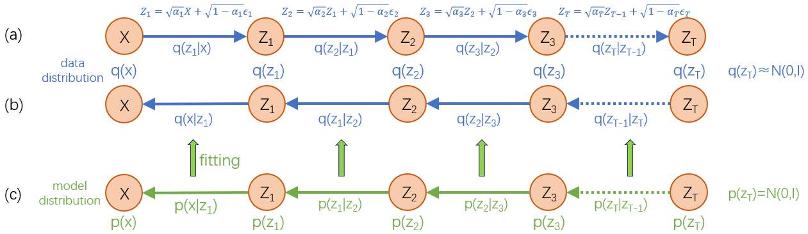
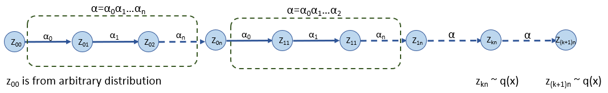
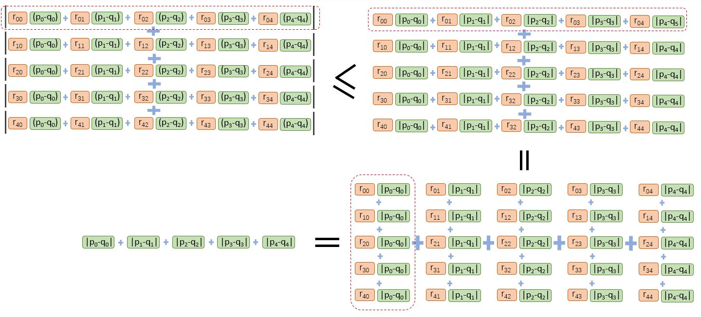
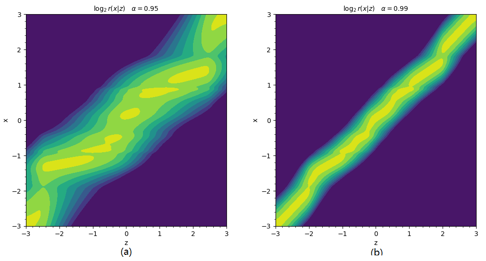
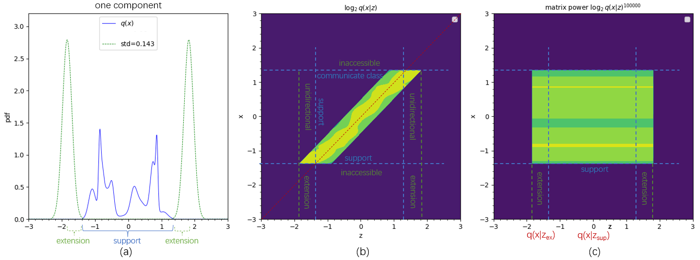
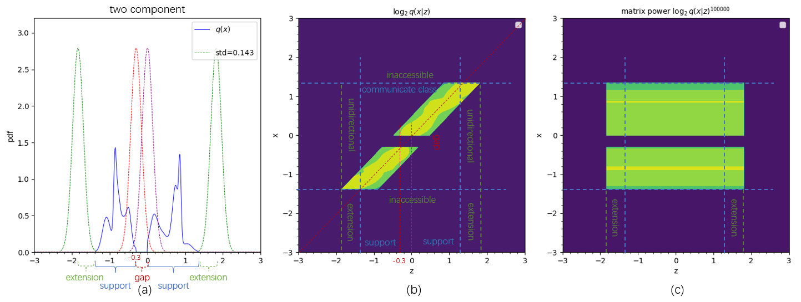
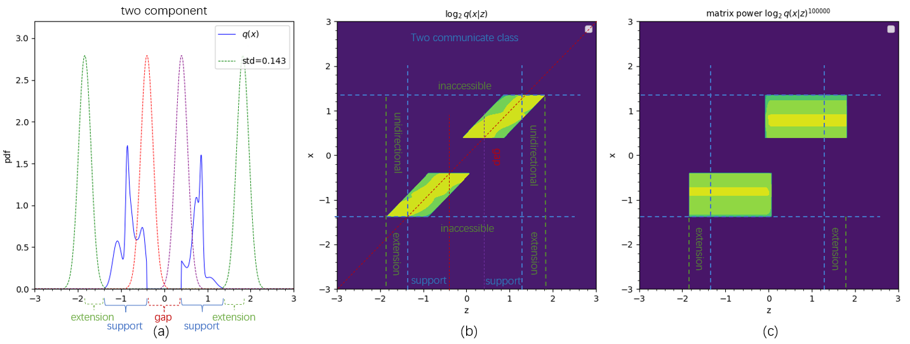
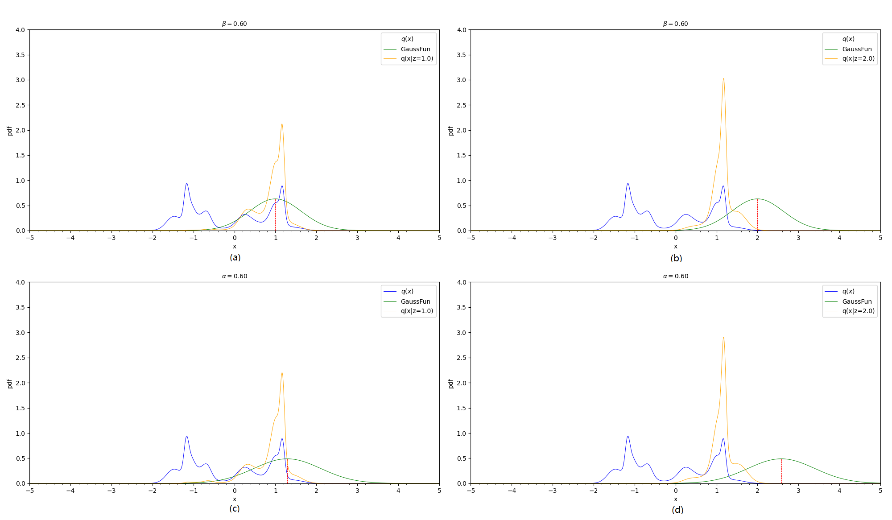
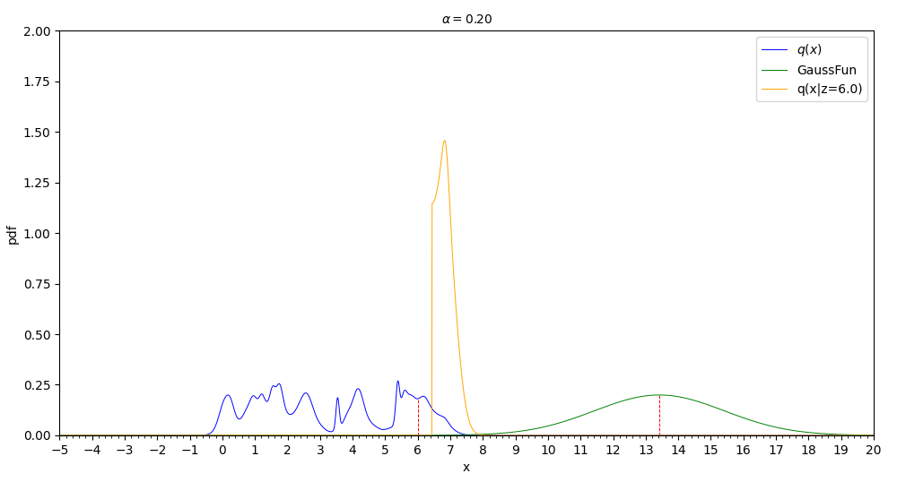

Understanding Anti-Noise Capacity of Reverse Process In Diffusion Model
扩散模型[1][2]是当前图像生成和视频生成使用的主要方式，但由于其晦涩的理论，很多工程师并不能很好地理解。本文将提供一种非常直观易懂的方式，方便读者理解把握扩散模型的原理。特别地，将以互动的形式，以一维随机随机变量的扩散模型进行举例，直观解释扩散模型的多个有趣的性质。
扩散模型是一个概率模型。概率模型主要提供两方面的功能：计算给定样本出现的概率；采样生成新样本。扩散模型侧重于第二方面，方便采样新样本，从而实现"生成"的任务。
扩散模型与一般的概率模型(如GMM)不同，直接建模随机变量的概率分布。扩散模型采用一种间接方式，利用“随机变量变换”的方式(如图1a)，逐步将待建模的概率分布(数据分布)转变成"标准正态分布"，同时，建模学习各个变换对应的后验概率分布(图1b-c)。有了最终的标准正态分布和各个后验概率分布，则可通过祖先采样(Ancestral Sampling)的方式，从反向逐步采样得到各个随机变量ZT…Z2,Z1,X的样本。同时也可通过贝叶斯公式和全概率公式确定初始的数据分布q(x)。
可能会有这样的疑问：间接的方式需要建模学习T个后验概率分布，直接方式只需要建模学习一个概率分布，为什么要选择间接的方式呢？是这样子的：初始的数据分布可能很复杂，很难用一个概率模型直接表示；而对于间接的方式，各个后验概率分布的复杂度会简单许多，可以用简单的概率模型进行拟合。下面将会看到，当满足一些条件时，后验概率分布将非常接近高斯分布，所以可以使用简单的条件高斯模型进行建模。

The Diffusion Probability Model[1][2] is currently the main method used in image and video generation, but due to its abstruse theory, many engineers are unable to understand it well. This article will provide a very easy-to-understand method to help readers grasp the principles of the Diffusion Model. Specifically, it will illustrate the Diffusion Model using examples of one-dimensional random variables in an interactive way, explaining several interesting properties of the Diffusion Model in an intuitive manner.
The diffusion model is a probabilistic model. Probabilistic models mainly offer two functions: calculating the probability of a given sample appearing; and generating new samples. The diffusion model focuses on the latter aspect, facilitating the production of new samples, thus realizing the task of generation.
The diffusion model differs from general probability models (such as GMM), which directly models the probability distribution of random variables. The diffusion model adopts an indirect approach, which utilizes random variable transform(shown in Figure 1a) to gradually convert the data distribution (the probability distribution to be modeled) into the standard normal distribution, and meanwhile models the posterior probability distribution corresponding to each transformation (Figure 1b-c). Upon obtaining the final standard normal distribution and the posterior probability distributions, one can generate samples of each random variable ZT…Z2,Z1,X in reverse order through Ancestral Sampling. Simultaneously, initial data distribution q(x) can be determined by employing Bayes theorem and the total probability theorem.
One might wonder: indirect methods require modeling and learning T posterior probability distributions, while direct methods only need to model one probability distribution, Why would we choose the indirect approach? Here's the reasoning: the initial data distribution might be quite complex and hard to represent directly with a probability model. In contrast, the complexity of each posterior probability distribution in indirect methods is significantly simpler, allowing it to be approximated by simple probability models. As we will see later, given certain conditions, posterior probability distributions can closely resemble Gaussian distributions, thus a simple conditional Gaussian model can be used for modeling.
为了将初始的数据分布转换为简单的标准正态分布，扩散模型采用如下的变换方式 Z=αX+1−αϵwhereα<1,ϵ∼N(0,I)(1.1) 其中X∼q(x)是任意的随机变量，Z∼q(Z)是变换后的随机变量。
此变换可分为两个子变换。
第一个子变换是对随机变量X执行一个线性变换(αX)，根据文献[3]的结论，线性变换使X的概率分布“变窄变高”，并且"变窄变高"的程度与α的值成正比。具体可看Demo 1，左1图为随机生成的一维的概率分布，左2图是经过线性变换后的概率分布，可以看出，与左1图相比，左2图的曲线“变窄变高”了。读者可亲自测试不同的α值，获得更直观的理解。
第二个子变换是“加上独立的随机噪声”(1−αϵ)，根据文献[4]的结论，“加上独立的随机变量”等效于对两个概率分布执行卷积，由于随机噪声的概率分布为高斯形状，所以相当于执行”高斯模糊“的操作。经过模糊后，原来的概率分布将变得更加平滑，与标准正态分布将更加相似。模糊的程度与噪声大小(1−α)正相关。具体可看Demo 1，左1图是随机生成的一维概率分布，左3图是经过变换后的结果，可以看出，变换后的曲线变光滑了，棱角变少了。读者可测试不同的α值，感受噪声大小对概率分布曲线形状的影响。左4图是综合两个子变换后的结果。
To transform the initial data distribution into a simple standard normal distribution, the diffusion model uses the following transformation method: Z=αX+1−αϵwhereα<1,ϵ∼N(0,I)(1.1) where X∼q(x)is any random variable，Z∼q(Z) is the transformed random variable。
This transformation can be divided into two sub-transformations。
The first sub-transformation performs a linear transformation (αX) on the random variable X. According to the conclusion of the literature[3], the linear transformation makes the probability distribution of X narrower and taller, and the extent of narrowing and heightening is directly proportional to the value of α.
This can be specifically seen in Demo 1, where the first figure depicts a randomly generated one-dimensional probability distribution, and the second figure represents the probability distribution after the linear transformation. It can be observed that the curve of the third figure has become narrower and taller compared to the first image. Readers can experiment with different α to gain a more intuitive understanding.
The second sub-transformation is adding independent random noise(1−αϵ). According to the conclusion of the literature[4], adding independent random variables is equivalent to performing convolution on the two probability distributions. Since the probability distribution of random noise is Gaussian, it is equivalent to performing a Gaussian Blur operation. After blurring, the original probability distribution will become smoother and more similar to the standard normal distribution. The degree of blurring is directly proportional to the noise level (1−α).
For specifics, one can see Demo 1, where the first figure is a randomly generated one-dimensional probability distribution, and the third figure is the result after the transformation. It can be seen that the transformed probability distribution curve is smoother and there are fewer corners. The readers can test different α values to feel how the noise level affect the shape of the probability distribution. The last figure is the result after applying all two sub-transformations.
![undefined plot visualising provided data]()
![undefined plot visualising provided data]()
![undefined plot visualising provided data]()
![undefined plot visualising provided data]()
由变换的方式(式1.1)可以看出，前向条件概率q(z∣x)的概率分布为高斯分布，且只与α的值有关，与q(x)的概率分布无关。 q(z∣x)=N(αx, 1−α)(2.1) 具体可看Demo 2，左3图展示了q(z∣x)的形状，从图中可以看到一条均匀的斜线，这意味着q(z∣x)的均值与x线性相关，方差固定不变。α值的大小将决定斜线宽度和倾斜程度。
From the transformation method (equation 1.1), it can be seen that the probability distribution of the forward conditional probability q(z∣x) is a Gaussian distribution, which is only related to the value of α, regardless of the probability distribution of q(x). q(z∣x)=N(αx, 1−α)(2.1) It can be understood by concrete examples in Demo 2. The third figure depict the shape of q(z∣x). From the figure, a uniform slanting line can be observed. This implies that the mean of q(z∣x) is linearly related to x, and the variance is fixed. The magnitude of α will determine the width and incline of the slanting line.
后验概率分布没有闭合的形式，但可以通过一些方法，推断其大概的形状，并分析影响其形状的因素。
根据Bayes公式，有 q(x∣z)=q(z)q(z∣x)q(x)(3.1)
当z是取固定值时，q(z)是常数，所以q(x∣z)是关于x的概率密度函数，并且其形状只与q(z∣x)q(x)有关。 q(x∣z)=∝q(z∣x)q(x)where z is fixed(3.2)
实际上，q(z)=∫q(z∣x)q(x)dx，也就是说，q(z)是对函数q(z∣x)q(x)遍历x求和，所以，q(z∣x)q(x)除以q(z)相当于对q(z∣x)q(x)执行归一化。 q(x∣z)=Normalize(q(z∣x)q(x))(3.3)
由式2.1可知，q(z∣x)为高斯分布，于是有 q(x∣z)∝2π(1−α)1exp2(1−α)−(z−αx)2 q(x)=α12πα1−α1exp2α1−α−(αz−x)2 q(x)=α1GaussFun2πσ1exp2σ2−(x−μ)2 q(x)where z is fixedwhere μ=αzσ=α1−α(3.4)
可以看出，GaussFun部分是关于x的高斯函数，均值为αz，标准差为α1−α，所以q(x∣z)的形状由“GaussFun与q(x)相乘”决定。
根据”乘法“的特点，可以总结q(x∣z)函数形状具有的特点。
- q(x∣z)的支撑集应该包含于GaussFun的支撑集，GaussFun的支撑集是一个超球体，中心位于均值μ，半径约为3倍标准差σ。
- 当高斯函数的方差较小(较小噪声)，或者q(x)线性变化时，q(x∣z)的形状将近似于高斯函数，函数形式较简单，方便建模学习。
- 当高斯函数的方差较大(较大噪声)，或者q(x)剧烈变化时，q(x∣z)的形状将较复杂，与高斯函数有较大的差别，难以建模学习。
Appendix B给出了较严谨的分析，当σ满足一些条件时，q(x∣z)的近似于高斯分布。
具体可看Demo 2，左4图给出后验概率分布q(x∣z)的形态，可以看出，其形状较不规则，像一条弯曲且不均匀的曲线。当α较大时(噪声较小)，曲线将趋向于均匀且笔直。读者可调整不同的α值，观察后验概率分布与噪声大小的关系；左5图，蓝色虚线给出q(x)，绿色虚线给出式3.4中的GaussFun，黄色实线给出两者相乘并归一化的结果，即固定z条件下后验概率q(x∣z=fixed)。读者可调整不同z值，观察q(x)的波动变化对后验概率q(x∣z)形态的影响。
两个特殊状态下的后验概率分布q(x∣z)值得考虑一下。
- 当α→0时，GaussFun的标准差趋向于无穷大，GaussFun变成一个很大支撑集的近似的均匀分布，q(x)与均匀分布相乘结果仍为q(x)，所以，不同z值对应的q(x∣z)几乎变成一致，并与q(x)几乎相同。读者可在Demo 2中，将α设置为0.001，观察具体的结果。
- 当α→1时，GaussFun的标准差趋向于无穷小，不同z值的q(x∣z)收缩成一系列不同偏移量的Dirac delta函数, 偏移量等于z。但有一些例外，当q(x)存在为零的区域时，其对应的q(x∣z)将不再为Dirac delta函数，而是零函数。可在Demo 2中，将α设置为0.999，观察具体的结果。
有一点需要注意一下，当α→0时，较大z值对应的GaussFun的均值(μ=αz)也急剧变大，也就是说，GaussFun位于离原点较远的地方，此时，q(x)的支撑集对应的GaussFun部分的“均匀程度”会略微有所下降, 从而会略微降低q(x∣z)与q(x)的相似度，但这种影响会随着α减小而进一步降低。读者可在Demo 2中观察此影响，将α设置为0.001，q(x∣z=−2)与q(x)会略微有一点差别，但q(x∣z=0)与q(x)却看不出区别。
关于高斯函数的"均匀程度"，有如下两个特点：标准差越大，均匀程度越大；离均值越远，均匀程度越小。
The posterior probability distribution does not have a closed form, but its shape can be inferred approximately through some technique.
According to Bayes formula, we have q(x∣z)=q(z)q(z∣x)q(x)(3.1)
When z is fixed, q(z) is a constant, so q(x∣z) is a probability density function with respect to x, and its shape depends only on q(z∣x)q(x). q(x∣z)∝q(z∣x)q(x)where z is fixed(3.2)
In fact, q(z)=∫q(z∣x)q(x)dx, which means that q(z) is the sum over x of the function q(z∣x)q(x). Therefore, dividing q(z∣x)q(x) by q(z) is equivalent to normalizing q(z∣x)q(x). q(x∣z)=Normalize(q(z∣x)q(x))(3.3)
From Equation 2.1, we can see that q(z∣x) is a Gaussian distribution, so we have q(x∣z)∝2π(1−α)1exp2(1−α)−(z−αx)2 q(x)=α12πα1−α1exp2α1−α−(αz−x)2 q(x)=α1GaussFun2πσ1exp2σ2−(x−μ)2 q(x)where z is fixedwhere μ=αzσ=α1−α(3.4)
It can be observed that the GaussFun part is a Gaussian function of x, with a mean of αz and a variance of α1−α, so the shape of q(x∣z) is determined by the product of GaussFun and q(x).
According to the characteristics of multiplication, the characteristics of the shape of the q(x∣z) function can be summarized.
- The support set of q(x∣z) should be contained within the support set of GaussFun. The support set of GaussFun is a hypersphere, centered at the mean μ with a radius of approximately 3 times the standard deviation σ.
- When the variance of the Gaussian function is small (small noise), or when q(x) changes linearly, the shape of q(x∣z) will approximate to the Gaussian function, and have a simpler function form, which is convenient for modeling and learning.
- When the variance of the Gaussian function is large (large noise), or when q(x) changes drastically, the shape of q(x∣z) will be more complex, and greatly differ from a Gaussian function, which makes it difficult to model and learn.
Appendix B provides a more rigorous analysis. When σ satisfies certain conditions, q(x∣z) approximates to Gaussiani distribution.
The specifics can be seen in Demo 2. The fourth figure present the shape of the posterior q(x∣z), which shows an irregular shape and resembles a curved and uneven line. As α increases (noise decreases), the curve tends to be uniform and straight. Readers can adjust different α values and observe the relationship between the shape of posterior and the level of noise. In the last figure, the blue dash line represents q(x), the green dash line represents GaussFun in the equation 3.4, and the orange curve represents the result of multiplying the two function and normalizing it, which is the posterior probability q(x∣z=fixed) under a fixed z condition. Readers can adjust different values of z to observe how the fluctuation of q(x) affect the shape of the posterior probability q(x∣z).
The posterior q(x∣z) under two special states are worth considering.
- As α→0, the variance of GaussFun tends to ∞, and GaussFun almost becomes a uniform distribution over a very large support set, and the result of multiplying q(x) by the uniform distribution is still q(x), therefore, q(x∣z) for different z almost become identical, and almost the same as q(x). Readers can set α to 0.001 in Demo 2 to observe the specific results.
- As α→1, the variance of GaussFun tends to 0, The q(x∣z) for different z values contract into a series of Dirac delta functions with different offsets equalling to z. However, there are some exceptions. When there are regions where q(x) is zero, the corresponding q(x∣z) will no longer be a Dirac delta function, but a zero function. Readers can set α to 0.999 in Demo 2 to observe the specific results.
There is one point to note. when α→0, the mean of GaussFun corresponding for larger z values(μ=αz) also increases sharply. This means that GaussFun is located farther from the support of q(x). In this case, the "uniformity" of the part of GaussFun corresponding to the support of q(x) will slightly decrease, thereby slightly reducing the similarity between q(x∣z) and q(x). However, this effect will further diminish as α decreases. Readers can observe this effect in Demo 2. Set α to 0.001, and you will see a slight difference between q(x∣z=−2) and q(x), but no noticeable difference between q(x∣z=0) and q(x).
Regarding the "uniformity" of the Gaussian function, there are two characteristics: the larger the standard deviation, the greater the uniformity; the farther away from the mean, the smaller the uniformity.
![undefined plot visualising provided data]()
![undefined plot visualising provided data]()
![undefined plot visualising provided data]()
![undefined plot visualising provided data]()
![undefined plot visualising provided data]()
对于任意的数据分布q(x)，均可连续应用上述的变换(如式4.1~4.4)，随着变换的次数的增多，输出的概率分布将变得越来越接近于标准正态分布。对于较复杂的数据分布，需要较多的次数或者较大的噪声。
具体可看Demo 3.1，第一子图是随机生成的一维概率分布，经过7次的变换后，最终的概率分布与标准正态分布非常相似。相似的程度与迭代的次数和噪声大小正相关。对于相同的相似程度，如果每次所加的噪声较大(较小的α值)，那所需变换的次数将较少。读者可尝试不同的α值和次数，观测最终概率分布的相似程度。
起始概率分布的复杂度会比较高，随着变换的次数增多，概率分布q(zt)的复杂度将会下降。根据第3节结论，更复杂的概率分布对应更复杂的后验概率分布，所以，为了保证后验概率分布与高斯函数较相似(较容易学习)，在起始阶段，需使用较大的α(较小的噪声)，后期阶段可适当使用较小的α(较大的噪声)，加快向标准正态分布转变。
在Demo 3.1的例子可以看到，随着变换次数增多，q(zt)的棱角变得越来越少，同时，后验概率分布q(zt−1∣zt)图中的斜线变得越来越笔直匀称，越来越像条件高斯分布。
Z1Z2ZtZT=α1X+1−α1ϵ1=α2Z1+1−α2ϵ2…=αtZt−1+1−αtϵt…=αTZT−1+1−αTϵTwhereαt<1t∈1,2,…,T(4.1)(4.2)(4.3)(4.4)
把式4.1代入式4.2，同时利用高斯分布的性质，可得出q(z2∣x)的概率分布的形式 z2=α2(α1x+1−α1ϵ1)+1−α2ϵ2=α2α1x+α2−α2α1ϵ1+1−α2ϵ2=N(α1α2x, 1−α1α2)(4.5)(4.6)(4.7)
同理，可递推得出 q(zt∣x)=N(α1α2⋯αtx, 1−α1α2⋯αt)=N(αtˉx, 1−αtˉ)where αtˉ≜j=1∏tαj(4.8)
比较式4.8和式2.1的形式，可发现，两者的形式是完全一致的。
如果只关注首尾两个变量之间的关系，那么连续t次的小变换可用一次大变换替代，大变换的α是各个小变换的α累积，因为两种变换对应的联合概率分布相同。
读者可在Demo 3.1中做一个实验，对同样的输入分布q(x)，使用两种不同的变换方式：1)使用三个变换，α均为0.95; 2)使用一个变换，α设置为0.857375。分别执行变换，然后比较变换后的两个分布，将会看到，两个分布是完全相同的。
在DDPM[2]论文中，作者使用了1000步(T=1000)，将数据分布q(x)转换至q(zT)，q(zT∣x)的概率分布如下： q(zT∣x)=N(0.00635 x, 0.99998)(4.9)
如果只考虑X,ZT的联合分布q(x,zT)，也可使用一次变换代替，变换如下: ZT=0.0000403 X+1−0.0000403 ϵ=0.00635 X+0.99998 ϵ(4.10) 可以看出，应用两种变换后，变换后的分布q(zT∣x)相同，因此，q(x,zT)也相同。
For any arbitrary data distribution q(x), the transform(equation 2.1) in section 2 can be continuously applied(equation 4.1~4.4). As the number of transforms increases, the output probability distribution will become increasingly closer to the standard normal distribution. For more complex data distributions, more iterations or larger noise are needed.
Specific details can be observed in Demo 3.1. The first figure illustrates a randomly generated one-dimensional probability distribution. After seven transforms, this distribution looks very similar to the standard normal distribution. The degree of similarity increases with the number of iterations and the level of the noise. Given the same degree of similarity, fewer transforms are needed if the noise added at each step is larger (smaller α value). Readers can try different α values and numbers of transforms to see how similar the final probability distribution is.
The complexity of the initial probability distribution tends to be high, but as the number of transforms increases, the complexity of the probability distribution q(zt) will decrease. As concluded in section 4, a more complex probability distribution corresponds to a more complex posterior probability distribution. Therefore, in order to ensure that the posterior probability distribution is more similar to the Conditional Gaussian function (easier to learn), a larger value of α (smaller noise) should be used in the initial phase, and a smaller value of α (larger noise) can be appropriately used in the later phase to accelerate the transition to the standard normal distribution.
In the example of Demo 3.1, it can be seen that as the number of transforms increases, the corners of q(zt) become fewer and fewer. Meanwhile, the slanting lines in the plot of the posterior probability distribution q(zt−1∣zt) become increasingly straight and uniform, resembling more and more the conditional Gaussian distribution.
Z1Z2ZtZT=α1X+1−α1ϵ1=α2Z1+1−α2ϵ2…=αtZt−1+1−αtϵt…=αTZT−1+1−αTϵTwhereαt<1t∈1,2,…,T(4.1)(4.2)(4.3)(4.4)
By substituting Equation 4.1 into Equation 4.2, and utilizing the properties of Gaussian distribution, we can derive the form of q(z2∣x) z2=α2(α1x+1−α1ϵ1)+1−α2ϵ2=α2α1x+α2−α2α1ϵ1+1−α2ϵ2=N(α1α2x, 1−α1α2)(4.5)(4.6)(4.7)
In the same way, it can be deduced recursively that q(zt∣x)=N(α1α2⋯αtx, 1−α1α2⋯αt)=N(αtˉx, 1−αtˉ)where αtˉ≜j=1∏tαj(4.8)
Comparing the forms of Equation 4.8 and Equation 2.1, it can be found that their forms are completely consistent.
If we only focus on the relationship between the initial and final random variables, then a sequence of t small transforms can be replaced by one large transform, and the α of the large transform is the accumulation of the α from each small transform, because the joint probability distributions corresponding to both types of transforms are the same.
Readers can perform an experiment in Demo 3.1 using the same input distribution q(x) but with two different transform methods: 1) using three transformations, each with α equal to 0.95; 2) using a single transform with α set to 0.857375. Perform the transformations separately and then compare the two resulting distributions. You will see that the two distributions are identical.
In the DDPM[2] paper, the authors used 1000 steps (T=1000) to transform the data distribution q(x) to q(zT). The probability distribution of q(zT∣x) is as follows: q(zT∣x)=N(0.00635 x, 0.99998)(4.9)
If only considering the joint distribution q(x,zT), a single transformation can also be used as a substitute, which is as follows: ZT=0.0000403 X+1−0.0000403 ϵ=0.00635 X+0.99998 ϵ(4.10) It can be seen that, after applying two transforms, the transformed distributions q(zT∣x) are the same. Thus, q(x,zT) is also the same.
![undefined plot visualising provided data]()
![undefined plot visualising provided data]()
如果知道了最终的概率分布q(zT)及各个转换过程的后验概率q(x∣z),q(zt−1∣zt)，则可通过“贝叶斯公式”和“全概率公式”恢复数据分布q(x)，见式5.1~5.4。当最终的概率分布q(zT)与标准正态分布很相似时，可用标准正态分布代替。
具体可看Demo 3.2。示例中q(zT)使用N(0,1)代替，同时通过JS Div给出了误差大小。恢复的概率分布q(zt)及q(x)使用绿色曲线标识，原始的概率分布使用蓝色曲线标识。可以看出，数据分布q(x)能够被很好地恢复回来，并且误差(JS Divergence)会小于标准正态分布替换q(zT)引起的误差。 q(zT−1)q(zt−1)q(z1)q(x)=∫q(zT−1,zT)dzT=∫q(zT−1∣zT)q(zT)dzT…=∫q(zt−1,zt)dzt=∫q(zt−1∣zt)q(zt)dzt…=∫q(z1,z2)dz1=∫q(z1∣z2)q(z2)dz2=∫q(x,z1)dz1=∫q(x∣z1)q(z1)dz1(5.1)(5.2)(5.3)(5.4) 在本文中，将上述恢复过程(式5.1~5.4)所使用的变换称之为“后验概率变换”。例如，在式5.4中，变换的输入为概率分布函数q(z1)，输出为概率分布函数q(x)，整个变换由后验概率分布q(x∣z1)决定。此变换也可看作为一组基函数的线性加权和，基函数为不同条件下的q(x∣z1)，各个基函数的权重为q(z1)。在第7节，将会进一步介绍此变换的一些有趣性质。
在第3节中，我们考虑了两个特殊的后验概率分布。接下来，分析其对应的”后验概率变换“。
- 当α→0时，不同z值的q(x∣z)均与q(x)几乎相同，也就是说，线性加权和的基函数几乎相同。此状态下，不管输入如何变化，变换的输出总为q(x)。
- 当α→1时，不同z值的q(x∣z)收缩成一系列不同偏移量的Dirac delta函数及零函数。此状态下，只要输入分布的支撑集(support set)包含于q(x)的支撑集，变换的输出与输入将保持一致。
在第4节中提到，DDPM[2]论文所使用的1000次变换可使用一次变换表示： ZT=0.0000403 X+1−0.0000403 ϵ=0.00635 X+0.99998 ϵ(5.5) 由于α=0.0000403非常小，其对应的GaussFun(式3.4)的标准差达到157.52。如果把q(x)的支撑集限制在单位超球范围内(∥x∥2<1)，那当zT∈[−2,+2]时，对应的各个q(x∣zT)均与q(x)非常相似。在这种状态下，对于q(x∣zT)相应的后验概率变换，不管输入分布的形状的如何，只要支撑集在[−2,+2]范围内，其输出分布都将是q(x)。
所以，可以总结，在DPM模型中，如果q(x)的支撑集是有限的，并且最终变量ZT的信噪比足够大，那恢复q(x)的过程可以使用任意的分布，不必一定需要使用标准正态分布。
读者可亲自做一个类似的实验。在Demo 3.1中，将start_alpha设置0.25，end_alpha也设置为0.25，step设置为7，此时q(z7)=0.000061X+1−0.000061ϵ，与DDPM的q(zT)基本相似。点击apply执行前向变换(蓝色曲线)，为接下来的反向恢复做准备。在Demo 3.2中，noise_ratio设置为1，为末端分布q(z7)引入100%的噪声，切换nose_random_seed的值可改变噪声的分布，取消选择backward_pdf，减少画面的干扰。点击apply将通过后验概率变换恢复q(x)，将会看到，不管输入的q(z7)的形状如何，恢复的q(x)均与原始的q(x)完全相同, JS Divergence为0，恢复的过程使用红色曲线画出。
另外有一点值得注意一下，在深度学习任务中，常将输入样本的各个维度缩放在[-1,1]范围内，也是说在一个超立方体内(hypercube)。超立方体内任意两点的最大欧氏距离会随着维度的增多而变大，比如，对于一维，最大距离为2，对于二维，最大距离为22，对于三维，最大距离为23，对于n维，最大距离为2n。所以，对于维度较高的数据，需要ZT变量有更高的信噪比，才能让恢复过程的起始分布接受任意的分布。
If the final probability distribution q(zT) and the posterior probabilities of each transform q(x∣z),q(zt−1∣zt) are known, the data distribution q(x) can be recovered through the Bayes Theorem and the Law of Total Probability, as shown in equations 5.1~5.4. When the final probability distribution q(zT) is very similar to the standard normal distribution, the standard normal distribution can be used as a substitute.
Specifics can be seen in Demo 3.2. In the example, q(zT) substitutes N(0,1), and the error magnitude is given through JS Divergence. The restored probability distribution q(zt) and q(x) are identified by the green curve, and the original probability distribution is identified by the blue curve. It can be observed that the data distribution q(x) can be well restored, and the error (JS Divergence) will be smaller than the error caused by the standard normal distribution replacing q(zT). q(zT−1)q(zt−1)q(z1)q(x)=∫q(zT−1,zT)dzT=∫q(zT−1∣zT)q(zT)dzT…=∫q(zt−1,zt)dzt=∫q(zt−1∣zt)q(zt)dzt…=∫q(z1,z2)dz1=∫q(z1∣z2)q(z2)dz2=∫q(x,z1)dz1=∫q(x∣z1)q(z1)dz1(5.1)(5.2)(5.3)(5.4) In this article, the aforementioned transform is referred to as the Posterior Transform. For example, in equation 5.4, the input of the transform is the probability distribution function q(z1), and the output is the probability distribution function q(x).The entire transform is determined by the posterior q(x∣z1). This transform can also be considered as the linear weighted sum of a set of basis functions, where the basis functions are q(x∣z1) under different z1, and the weights of each basis function are q(z1). Some interesting properties of this transform will be introduced in Section 7.
In Section 3, we have considered two special posterior probability distributions. Next, we analyze their corresponding posterior transforms.
- When α→0, the q(x∣z) for different z are almost the same as q(x). In other words, the basis functions of linear weighted sum are almost the same. In this state, no matter how the input changes, the output of the transformation is always q(x).
- When α→1, the q(x∣z) for different z values becomes a series of Dirac delta functions and zero functions. In this state, as long as the support of the input distribution is included in the support set of q(x), the output of the transformation will remain the same with the input.
In Section 4, it is mentioned that the 1000 transformations used in the DDPM[2] can be represented using a single transformation ZT=0.0000403 X+1−0.0000403 ϵ=0.00635 X+0.99998 ϵ(5.5)
Since α=0.0000403 is very small, the corresponding standard deviation of GaussFun (Equation 3.4) reaches 157.52. If we constrain the support of q(x) within the unit hypersphere (∥x∥2<1), then for zT in the range [−2,+2], each corresponding q(x∣zT) is very similar to q(x). In this state, for the posterior transform of q(x∣zT), regardless of the shape of the input distribution, as long as the support set is within the range [−2,+2], the output distribution will be q(x).
Furthermore, we can conclude that in the DPM model, if the support of q(x) is finite and the signal-to-noise ratio of the final variable ZT is sufficiently high, the process of restoring q(x) can use any distribution; it doesn't necessarily have to use the standard normal distribution.
Readers can conduct a similar experiment themselves. In Demo 3.1, set start_alpha to 0.25, end_alpha to 0.25, and step to 7. At this point, q(z7)=0.000061X+1−0.000061ϵ, which is roughly equivalent to DDPM's q(zT). Click on apply to perform the forward transform (plotted using blue curves), which prepares for the subsequent restoring process. In Demo 3.2, set the noise_ratio to 1, introducing 100% noise into the tail distribution q(z7). Changing the value of nose_random_seed will change the distribution of noise. Deselect backward_pdf to reduce screen clutter. Click on apply to restore q(x) through posterior transform. You will see that, no matter what the shape of input q(z7) may be, the restored q(x) is always exactly the same as the original q(x). The JS Divergence is zero. The restoration process is plotted using a red curve.
There is another point worth noting. In deep learning tasks, it is common to scale each dimension of the input within the range [-1, 1], which means within a unit hypercube. The maximum Euclidean distance between any two points in a unit hypercube increases with the dimensionality. For example, in one dimension, the maximum distance is 2, two dimensions is 22, three dimensions is 23, and n dimensions is 2n. Therefore, for data with higher dimensions, the variable ZT needs a higher signal-to-noise ratio to allow the starting distribution of the recovery process to accept any distribution.
![undefined plot visualising provided data]()
由第3节前半部分可知，各个后验概率分布是未知的，并且与q(x)有关。所以，为了恢复数据分布或者从数据分布中采样，需要对各个后验概率分布进行学习估计。
由第3节后半部分可知，当满足一定条件时，各个后验概率分布q(x∣z)、q(zt−1∣zt)近似于高斯概率分布，所以可通过构建一批条件高斯概率模型p(x∣z),p(zt−1∣zt)，学习拟合对应的q(x∣z),q(zt−1∣zt)。
由于模型表示能力和学习能力的局限性，拟合过程会存在一定的误差，进一步会影响恢复q(x)的准确性。拟合误差大小与后验概率分布的形状有关。由第3节可知，当q(x)较复杂或者所加噪声较大时，后验概率分布会较复杂，与高斯分布差别较大，从而导致拟合误差，进一步影响恢复q(x)。
具体可看Demo 3.3，读者可测试不同复杂程度的q(x)和α，观看后验概率分布q(zt−1∣zt)的拟合程度，以及恢复q(x)的准确度。恢复的概率分布使用橙色标识，同时也通过JS divergence给出误差。
关于拟合的目标函数，与其它概率模型类似，可优化交叉熵损失，使p(zt−1∣zt)逼近于q(zt−1∣zt)。由于(zt−1∣zt)是条件概率，所以需要综合考虑各个条件，以各个条件发生的概率q(zt)加权平均各个条件对应的交叉熵。最终的损失函数形式如下: loss=−∫q(zt) ∫q(zt−1∣zt)logp(zt−1∣zt)dzt−1Cross Entropy dzt=−∬q(zt−1,zt)logp(zt−1∣zt)dzt−1dzt(6.1)(6.2) 也可以KL散度作为目标函数进行优化，KL散度与交叉熵是等价的[10]。 loss=∫q(zt)KL(q(zt−1∣zt)∥p(zt−1∣zt))dzt=∫q(zt)∫q(zt−1∣zt)logp(zt−1∣zt)q(zt−1∣zt)dzt−1dzt=−∫q(zt) Cross Entropy∫q(zt−1∣zt)logp(zt−1∣zt)dzt−1 dzt+Is Constant∫q(zt)∫q(zt−1∣zt)logq(zt−1∣zt)dz(6.3)(6.4)(6.5)
式6.2的积分没有闭合的形式，不能直接优化。可使用蒙特卡罗(Monte Carlo)积分近似计算，新的目标函数如下: loss=−∬q(zt−1,zt)logp(zt−1∣zt)dzt−1dzt≈−i=0∑Nlogp(Zt−1i∣Zti)where(Zt−1i,Zti)∼q(zt−1,zt)(6.6)(6.7)
上述的样本(Zt−1i,Zti)服从联合概率分布q(zt−1,zt)，可通过祖先采样的方式采样得到。具体方式如下：通过正向转换的方式(式4.1~4.4)，逐步采样X,Z1,Z2…Zt−1,Zt，然后留下(Zt−1,Zt)作为一个样本。但这种采样方式比较慢，可利用q(zt∣x)概率分布已知的特点(式4.8)加速采样，先从q(x)采样X，然后由q(zt−1∣x)采样Zt−1，最后由q(zt∣zt−1)采样Zt，于是得到一个样本(Zt−1,Zt)。
可能有些人会有疑问，式6.3的形式跟DPM[1]和DDPM[2]论文里的形式不太一样。实际上，这两个目标函数是等价的，下面给出证明。
对于一致项(Consistent Term)，证明如下:
loss=−∬q(zt−1,zt) logp(zt−1∣zt)dzt−1dzt=−∬∫q(x)q(zt−1,zt∣x)dx logp(zt−1∣zt)dzt−1dzt=∬∫q(x)q(zt−1,zt∣x)logq(zt−1∣zt,x)dxdzt−1dztThis Term Is Constant And Is Denoted As C1−∬∫q(x)q(zt−1,zt∣x)logp(zt−1∣zt)dxdzt−1dzt−C1=∬∫q(x)q(zt−1,zt∣x)logp(zt−1∣zt)q(zt−1∣zt,x)dxdzt−1dzt−C1=∬q(x)q(zt∣x)∫q(zt−1∣zt,x)logp(zt−1∣zt)q(zt−1∣zt,x)dzt−1 dztdx−C1=∬ q(x)q(zt∣x)KL(q(zt−1∣zt,x)∥p(zt−1∣zt))dztdx−C1∝∬ q(x)q(zt∣x)KL(q(zt−1∣zt,x)∥p(zt−1∣zt))dztdx(6.8)(6.9)(6.10)(6.11)(6.12)(6.13)(6.14)(6.15)
上式中的C1项是一个固定值，不包含待优化的参数，其中，q(x)是固定的概率分布，q(zt−1∣zt)也是固定概率分布，具体形式由q(x)及系数α确定。
对于重构项(Reconstruction Term)，可通过类似的方式证明： loss=−∫q(z1)∫q(x∣z1)logp(x∣z1)dxCross Entropy dz1=−∬q(z1,x)logp(x∣z1)dxdz1=−∫q(x)∫q(z1∣x)logp(x∣z1)dz1 dx(6.16)(6.17)(6.18)
因此，式6.1的目标函数与DPM的目标函数是等价的。
根据一致项证明的结论，以及交叉熵与KL散度的关系，可得出一个有趣的结论： minp∫q(zt)KL(q(zt−1∣zt)∥p(zt−1∣zt))dzt⟺minp∬ q(zt)q(x∣zt)KL(q(zt−1∣zt,x)∥p(zt−1∣zt))dxdzt(6.19) 比较左右两边的式子，可以看出，右边的目标函数比左边的目标函数多了一个条件变量X，同时也多了一个关于X积分，并且以X的发生的概率q(x∣zt)作为积分的加权系数。
依照类似的思路，可推导出一个更通用的关系： minpKL(q(z)∥p(z))⟺minp∫ q(x)KL(q(z∣x)∥p(z))dx(6.20) 关于此结论的详细推导，可见Appendix A。
From the front part of Section 3, it is known that the posterior probability distributions are unknown and related to q(x). Therefore, in order to recover the data distribution or sample from it, it is necessary to learn and estimate each posterior probability distribution.
From the latter part of Section 3, it can be understood that when certain conditions are met, each posterior probability distribution q(x∣z),q(zt−1∣zt) approximates the Gaussian probability distribution. Therefore, by constructing a set of conditional Gaussian probability models p(x∣z),p(zt−1∣zt), we can learn to fit the corresponding q(x∣z),q(zt−1∣zt).
Due to the limitations of the model's representative and learning capabilities, there will be certain errors in the fitting process, which will further impact the accuracy of restored q(x). The size of the fitting error is related to the complexity of the posterior probability distribution. As can be seen from Section 3, when q(x) is more complex or the added noise is large, the posterior probability distribution will be more complex, and it will differ greatly from the Gaussian distribution, thus leading to fitting errors and further affecting the restoration of q(x).
Refer to Demo 3.3 for the specifics. The reader can test different q(x) and α, observe the fitting degree of the posterior probability distribution q(zt−1∣zt) and the accuracy of restored q(x). The restored probability distribution is ploted with orange, and the error is also measured by JS divergence.
Regarding the objective function for fitting, similar to other probability models, the cross-entropy loss can be optimized to make p(zt−1∣zt) approaching q(zt−1∣zt). Since (zt−1∣zt) is a conditional probability, it is necessary to fully consider all conditions. This can be achieved by averaging the cross-entropy corresponding to each condition weighted by the probability of each condition happening. The final form of the loss function is as follows. loss=−∫q(zt)∫q(zt−1∣zt)logp(zt−1∣zt)dzt−1Cross Entropy dzt=−∬q(zt−1,zt)logp(zt−1∣zt)dzt−1dzt(6.1)(6.2)
KL divergence can also be optimized as the objective function. KL divergence and cross-entropy are equivalent[10] loss=∫q(zt)KL(q(zt−1∣zt)∥p(zt−1∣zt))dzt=∫q(zt)∫q(zt−1∣zt)logp(zt−1∣zt)q(zt−1∣zt)dzt−1dzt=−∫q(zt) Cross Entropy∫q(zt−1∣zt)logp(zt−1∣zt)dzt−1 dzt+Is Constant∫q(zt)∫q(zt−1∣zt)logq(zt−1∣zt)dz(6.3)(6.4)(6.5)
The integral in equation 6.2 does not have a closed form and cannot be directly optimized. The Monte Carlo integration can be used for approximate calculation. The new objective function is as follows: loss=−∬q(zt−1,zt)logp(zt−1∣zt)dzt−1dzt≈−i=0∑Nlogp(Zt−1i∣Zti)where(Zt−1i,Zti)∼q(zt−1,zt)(6.6)(6.7)
The aforementioned samples (Zt−1i,Zti) follow a joint probability distribution q(zt−1,zt), which can be sampled via an Ancestral Sampling. The specific method is as follows: sample X,Z1,Z2…Zt−1,Zt step by step through forward transforms (Formulas 4.1~4.4), and then reserve (Zt−1,Zt) as a sample. This sampling process is relatively slow. To speed up the sampling, we can take advantage of the known features of the probability distribution q(zt∣x) (Formula 4.8). First, sample X from q(x), then sample Zt−1 from q(zt−1∣x), and finally sample Zt from q(zt∣zt−1). Thus, a sample (Zt−1,Zt) is obtained.
Some people may question that the objective function in Equation 6.3 seems different from those in the DPM[1] and DDPM[2] papers. In fact, these two objective functions are equivalent, and the proof is given below.
For Consistent Terms, the proof is as follows:
loss=−∬q(zt−1,zt) logp(zt−1∣zt)dzt−1dzt=−∬∫q(x)q(zt−1,zt∣x)dx logp(zt−1∣zt)dzt−1dzt=∬∫q(x)q(zt−1,zt∣x)logq(zt−1∣zt,x)dxdzt−1dztThis Term Is Constant And Is Denoted As C1−∬∫q(x)q(zt−1,zt∣x)logp(zt−1∣zt)dxdzt−1dzt−C1=∬∫q(x)q(zt−1,zt∣x)logp(zt−1∣zt)q(zt−1∣zt,x)dxdzt−1dzt−C1=∬q(x)q(zt∣x)∫q(zt−1∣zt,x)logp(zt−1∣zt)q(zt−1∣zt,x)dzt−1 dztdx−C1=∬ q(x)q(zt∣x)KL[q(zt−1∣zt,x)∥p(zt−1∣zt)]dztdx−C1∝∬ q(x)q(zt∣x)KL(q(zt−1∣zt,x)∥p(zt−1∣zt))dztdx(6.8)(6.9)(6.10)(6.11)(6.12)(6.13)(6.14)(6.15)
In the above formula, the term C1 is a fixed value, which does not contain parameters to be optimized. Here, q(x) is a fixed probability distribution, and q(zt−1∣zt) is also a fixed probability distribution, whose specific form is determined by q(x) and the coefficient α.
For the Reconstruction Term, it can be proven in a similar way.
loss=−∫q(z1)∫q(x∣z1)logp(x∣z1)dxCross Entropy dz1=−∬q(z1,x)logp(x∣z1)dxdz1=−∫q(x)∫q(z1∣x)logp(x∣z1)dz1 dx(6.16)(6.17)(6.18)
Therefore, the objective function in equation 6.1 is equivalent with the DPM original objective function.
Based on the conclusion of the Consistent Terms proof and the relationship between cross entropy and KL divergence, an interesting conclusion can be drawn: minp∫q(zt)KL(q(zt−1∣zt)∥p(zt−1∣zt))dzt⟺minp∬ q(zt)q(x∣zt)KL(q(zt−1∣zt,x)∥p(zt−1∣zt))dxdzt(6.19) By comparing the expressions on the left and right, it can be observed that the objective function on the right side includes an additional variable X compared to the left side. At the same time, there is an additional integral with respect to X, with the occurrence probability of X, denoted as q(x∣zt), serving as the weighting coefficient for the integral.
Following a similar proof method, a more general relationship can be derived: minpKL(q(z)∥p(z))⟺minp∫ q(x)KL(q(z∣x)∥p(z))dx(6.20) A detailed derivation of this conclusion can be found in Appendix A.
![undefined plot visualising provided data]()
![undefined plot visualising provided data]()
Non-expanding mapping and Stationary Distribution
q(x)=∫q(x,z)dz=∫q(x∣z)q(z)dz(7.1)根据Appendix B的Corollary 1和Corollary 2可知，后验概率变换是一个non-expanding mapping。也是说，对任意的两个概率分布qi1(z)和qi2(z)，经过后验概率变换后得到qo1(x)和qo2(x)，qo1(z)和qo2(z)的距离总是小于或等于qi1(x)和qi2(x)的距离。这里的距离可使用KL Divergence或Total Variance或度量。 d(qo1(z), qo2(z))≤d(qi1(x), qi2(x))(7.2) 根据Appendix B的分析可知，在大多数情况，上述的等号并不会成立。并且，当α越小时(噪声越多)，d(qo1,qo2)会越小于d(qi1,qi2)。
读者可查看Demo 4.1，左侧三个图呈现一个变换的过程，左1图是任意的数据分布q(x)，左3图是变换后的概率分布，左2图是后验概率分布。可更改随机种子生成新的数据分布，调整α值引入不同程度的噪声。左侧最后两个图展示变换的“压缩性质”，左4图展示随机生成的两个输入分布，同时给出其距离度量值divin；左5图展示经过变换后的两个输出分布，输出分布之间的距离标识为divout。读者可改变输入的随机种子，切换不同的输入。可在图中看到，对于任意的输入，divin总是小于divout。另外，也可改变α的值，将会看到，α越小(噪声越大)，divindivout的比值也越小，即收缩率越大。
根据Appendix C的分析可知：后验概率变换可视为markov chain的一步跳转，并且，当q(x)和α满足一些条件时，此markov chain会收敛于惟一的稳态分布。另外，通过大量实验发现，稳态分布与数据分布q(x)非常相似，当α越小时，稳态分布与q(x)越相似。特别地，根据第5节的结论，当α→0时，经过一步变换后，输出分布即是q(x)，所以稳态分布必定是q(x)。
读者可看Demo 4.2，此部分展示迭代收敛的例子。选择合适的迭代次数，点中“apply iteration transform”，将逐步画出迭代的过程，每个子图均会展示各自变换后的输出分布(绿色曲线)，收敛的参考点分布q(x)以蓝色曲线画出，同时给出输出分布与q(x)之间的距离dist。可以看出，随着迭代的次数增加，输出分布与q(x)越来越相似，并最终会稳定在q(x)附近。对于较复杂的分布，可能需要较多迭代的次数或者较大的噪声。迭代次数可以设置为上万步，但会花费较长时间。
对于一维离散的情况，q(x∣z)将离散成一个矩阵(记为Qx∣z)，q(z)离散成一个向量(记为qi)，积分操作∫q(x∣z)q(z)dz将离散成"矩阵-向量"乘法操作，所以后验概率变换可写成 qoqoqo=Qx∣z qi=Qx∣z Qx∣z qi…=(Qx∣z)n qi1 iteration2 iterationn iteration(7.3)(7.4)(7.5) 于是，为了更深入地理解变换的特点，Demo 4.2也画出矩阵(Qx∣z)n的结果。从图里可以看到，当迭代趋向收敛时，矩阵(Qx∣z)n的行向量将变成一个常数向量，即向量的各分量都相等。在二维密度图里将表现为一条横线。
对于一维离散的markov chain，收敛速度与转移概率矩阵的第二大特征值的绝对值(∣λ2∣)反相关，∣λ2∣越小，收敛速度越快。经过大量的实验发现，α与∣λ2∣有着明确的线性关系，α越小，∣λ2∣也越小。所以，α越小(噪声越大)，收敛速度越快。 特别地，当α→0时，由第3节的结论可知，各个z对应的后验概率分布趋向一致，而由文献[21]的Theorem 21可知，∣λ2∣小于任意两个z对应的后验概率分布的L1距离，所以，可知∣λ2∣→0。
Anti-noise Capacity In Restoring Data Distribution
由上面的分析可知，在大多数情况下，"后验概率变换"是一个收缩映射，所以存在如下的关系： d(q(x), qo(x))<d(q(z), qi(z))(7.12) 其中，q(z)是理想的输入分布，q(x)理想的输出分布，q(x)=∫q(x∣z)q(z)dz，qi(z)是任意的输入分布，qo(x)是变换后的输出分布，qo(x)=∫q(x∣z)qi(z)dz。上式表明，输出的分布qo(x)与理想输出分布q(x)之间的距离总会小于输入分布qi(z)与理想输入分布q(x)的距离。所以，”后验概率变换“天然具备一定的抵抗噪声能力。这意味着，在恢复q(x)的过程中(第5节)，哪怕输入的“末尾分布q(zT)”存在一定的误差，经过一系列变换后，输出的“数据分布q(x)“的误差也会比输入的误差更小。
具体可看Demo 3.2，通过增加“noise ratio”的值可以向“末尾分布q(zT)”添加噪声，点击“apply”按钮将逐步画出恢复的过程，恢复的分布以红色曲线画出，同时也会通过JS散度标出误差的大小。将会看到，恢复的q(x)的误差总是小于q(zT)的误差。
由上面的讨论可知，α越小(即变换过程中使用的噪声越大)，收缩映射的收缩率越大，相应地，抗噪声的能力也越强。特别地，当α→0时，抗噪声能力无限大，不论多大噪声的输入，输出都为q(x)。
Markov Chain Monte Carlo Sampling
在DPM模型中，通常是通过Ancestral Sampling的方式进行采样。由上面的分析可知，当α足够小时，后验概率变换会收敛于q(x)，所以，可通过Markov Chain Monte Carlo的方式进行采样。如图7.1所示。图中α代表一个较大的噪声的后验概率变换，较大的噪声使稳态分布更接近于数据分布q(x)，但由第3节可知，较大噪声的后验变换不利于拟合，所以把较大噪声的后验概率变换分成多个小噪声的后验概率变换。

Non-expanding Mapping and Stationary Distribution
q(x)=∫q(x,z)dz=∫q(x∣z)q(z)dz(7.1)According to Corollary 1 and Corollary 2 in Appendix B, the posterior transform is a non-expanding mapping. This means that for any two probability distributions qi1(z) and qi2(z), after the posterior transform, the resulting distributions qo1(x) and qo2(x) will have a distance that is always less than or equal to the distance between qi1(x) and qi2(x). The distance here can be measured using KL Divergence or Total Variance. d(qo1(z), qo2(z))≤d(qi1(x), qi2(x))(7.2) According to the analysis in Appendix B, the aforementioned equality does not hold in most cases and posterior transform becomes a shrinkig mapping. Furthermore, the smaller α is (the more noise), the smaller d(qo1,qo2) will be compared to d(qi1,qi2).
Readers can refer to Demo 4.1, where the first three figure present a transform process. The first figure is an arbitrary data distribution q(x), the third figure is the transformed probability distribution, and second figure is the posterior probability distribution q(x∣z). You can change the random seed to generate a new data distributionq(x), and adjust the value of α to introduce different degrees of noise.
The last two figures show contraction of the transform. The fourth figure displays two randomly generated input distributions and their distance, divin. The fifth figure displays the two output distributions after transform, with the distance denoted as divout.
Readers can change the input random seed to toggle different inputs. It can be observed from the figures that divin is always smaller than divout for any input. Additionally, if you change the value of α, you will see that the smaller the α(larger noise), the smaller the ratio of divout/divin，indicating a larger rate of contraction.
According to the analysis in Appendix C: the posterior transform can be seen as a one-step jump of a Markov chain, and when q(x) and α meet certain conditions, this Markov chain will converge to a unique stationary distribution. Additionally, numerous experiments have shown that the stationary distribution is very similar to the data distribution q(x), and the smaller α is, the more similar the stationary distribution is to q(x). Specifically, according to the conclusion in Section 5, when α→0, after one step of transform, the output distribution will be q(x), so the stationary distribution must be q(x).
Readers can refer to Demo 4.2, which illustrates an example of applying posterior transform iteratively. Choose an appropriate number of iterations, and click on the button of Apply, and the iteration process will be draw step by step. Each subplot shows the transformed output distribution(green curve) from each transform, with the reference distribution q(x) expressed as a blue curve, as well as the distance div between the output distribution and q(x). It can be seen that as the number of iterations increases, the output distribution becomes more and more similar to q(x), and will eventually stabilize near q(x). For more complicated distributions, more iterations or greater noise may be required. The maximum number of iterations can be set to tens of thousands, but it'll take longer.
For the one-dimensional discrete case, q(x∣z) is discretized into a matrix (denoted as Qx∣z), q(z) is discretized into a vector (denoted as qi). The integration operation ∫q(x∣z)q(z)dz is discretized into a matrix-vector multiplication operation, thus the posterior transform can be written as qoqoqo=Qx∣z qi=Qx∣z Qx∣z qi…=(Qx∣z)n qi1 iteration2 iterationn iteration(7.3)(7.4)(7.5) In order to better understand the property of the transform, the matrix (Qx∣z)n is also plotted in Demo 4.2. From the demo we can see that, as the iterations converge, the row vectors of the matrix (Qx∣z)n will become a constant vector, that is, all components of the vector will be the same, which will appear as a horizontal line in the denisty plot.
For a one-dimensional discrete Markov chain, the convergence rate is inversely related to the absolute value of the second largest eigenvalue of the transition probability matrix (∣λ2∣). The smaller ∣λ2∣ is, the faster the convergence. Numerous experiments have shown that α has a clear linear relationship with ∣λ2∣; the smaller α is, the smaller ∣λ2∣ is. Therefore, the smaller α (the greater the noise), the faster the convergence rate. Specifically, when α→0, according to the conclusion in Section 3, the posterior probability distributions corresponding to different z tend to be consistent. Additionally, according to Theorem 21 in [21], ∣λ2∣ is smaller than the L1 distance between any two posterior probability distributions corresponding to different z, so it can be concluded that ∣λ2∣→0.
Anti-noise Capacity In Restoring Data Distribution
From the above analysis, it can be seen that, in most cases, the posterior transform is a shrinking mapping, which means the following relationship
d(q(x), qo(x))<d(q(z), qi(z))(7.12)
Among them, q(z) is the ideal input distribution, q(x) is the ideal output distribution, q(x)=∫q(x∣z)q(z)dz, qi(z) is any input distribution, and qo(x) is the transformed output distribution, qo(x)=∫q(x∣z)qi(z)dz.
The above equation indicates that the distance between the output distribution qo(x) and the ideal output distribution q(x) will always be less than the distance between the input distribution qi(z) and the ideal input distribution q(x). Hence, the posterior transform naturally possesses a certain ability to resist noise . This means that during the process of restoring q(x)(Section 5), even if the tail distribution q(zT) contains some error, the error of the outputed distribution q(x) will be smaller than the error of input after undergoing a series of transform.
Refer specifically to Demo 3.2, where by increasing the value of the noise ratio, noise can be added to the tail distribution q(zT). Clicking the "apply" button will gradually draw out the restoring process, with the restored distribution represented by a red curve, and the error size will be computed by the JS divergence. You will see that the error of restored q(x) is always less than the error of q(zT).
From the above discussion, it can be seen that the smaller α is (the larger the noise used in the transform), the greater the shrinking rate of the shrink mapping, and correspondingly, the stronger the error resistance capability. Specifically, when α→0, the noise resistance capability becomes infinite, meaning that regardless of the magnitude of the error in the input, the output will always be q(x).
Markov Chain Monte Carlo Sampling
In DPM models, sampling is typically performed using Ancestral Sampling. From the analysis above, it can be inferred that when α is sufficiently small, the posterior transform will converge to q(x). Therefore, sampling can be conducted using Markov Chain Monte Carlo (MCMC) methods, as depicted in Figure 7.1. In the figure, α represents a posterior transform with relatively large noise, where larger noise makes the steady-state distribution closer to the data distribution q(x). However, as discussed in Section 3, posterior transform with larger noise are less favorable for fitting. Therefore, transform with larger noise are split into multiple transform with smaller noise.
![undefined plot visualising provided data]()
![undefined plot visualising provided data]()
![undefined plot visualising provided data]()
![undefined plot visualising provided data]()
![undefined plot visualising provided data]()
![undefined plot visualising provided data]()
在第1节中提到，式2.1的变换可分为两个子变换，第一个子变换为”线性变换“，第二个为“加上独立高斯噪声”。线性变换相当于对概率分布进行拉伸变换，所以存在逆变换。"加上独立高斯噪声”相当于对概率分布执行卷积操作，卷积操作可通过逆卷积恢复。所以，理论上，可通过“逆线性变换”和“逆卷积”从最终的概率分布q(zT)恢复数据分布q(x)。
但实际上，会存在一些问题。由于逆卷积对误差极为敏感，具有很高的输入灵敏度，很小的输入噪声就会引起输出极大的变化[11][12]。而在扩散模型中，会使用标准正态分布近似代替q(zT)，因此，在恢复的起始阶段就会引入噪声。虽然噪声较小，但由于逆卷积的敏感性，噪声会逐步放大，影响恢复。
另外，也可以从另一个角度理解“逆卷积恢复”的不可行性。由于前向变换的过程(式4.1~4.4)是确定的，所以卷积核是固定的，因此，相应的“逆卷积变换“也是固定的。由于起始的数据分布q(x)可以是任意的分布，所以，通过一系列固定的“卷积正变换”，可以将任意的概率分布转换成近似N(0,I)的分布。如“逆卷积变换“可行，则意味着，可用一个固定的“逆卷积变换"，将N(0,I)分布恢复成任意的数据分布q(x)，这明显是一个悖论。同一个输入，同一个变换，不可能会有多个输出。
As mentioned in the Section 1, the transform of Equation 2.1 can be divided into two sub-transforms, the first one being a linear transform and the second being adding independent Gaussian noise. The linear transform is equivalent to a scaling transform of the probability distribution, so it has an inverse transformation. Adding independent Gaussian noise is equivalent to the execution of a convolution operation on the probability distribution, which can be restored through deconvolution. Therefore, theoretically, the data distribution q(x) can be recovered from the final probability distribution q(zT) through inverse linear transform and deconvolution.
However, in actuality, some problems do exist. Due to the extreme sensitivity of deconvolution to errors, having high input sensitivity, even a small amount of input noise can lead to significant changes in output[11][12]. Meanwhile, in the diffusion model, the standard normal distribution is used as an approximation to replace q(zT), thus, noise is introduced at the initial stage of restoring. Although the noise is relatively small, because of the sensitivity of deconvolution, the noise will gradually amplify, affecting the restoring.
In addition, the infeasibility of deconvolution restoring can be understood from another perspective. Since the process of forward transform (equations 4.1 to 4.4) is fixed, the convolution kernel is fixed. Therefore, the corresponding deconvolution transform is also fixed. Since the initial data distribution q(x) is arbitrary, any probability distribution can be transformed into an approximation of N(0,I) through a series of fixed linear transforms and convolutions. If deconvolution restoring is feasible, it means that a fixed deconvolution can be used to restore any data distribution q(x) from the N(0,I) , this is clearly paradoxical. The same input, the same transform, cannot have multiple different outputs.
本节主要介绍KL散度与条件KL散度之间的关系。在正式介绍之前，先简单介绍熵和条件熵的定义，以及两者之间存在的不等式关系，为后面的证明作准备。
熵及条件熵
对于任意两个随机变量Z,X，熵(Entropy)定义如下[16]： H(Z)=∫−p(z)logp(z)dz(A.1) 条件熵(Conditional Entropy)的定义如下[17]： H(Z∣X)=∫p(x)∫−p(z∣x)logp(z∣x)dzEntropy dx(A.2) 两者存在如下的不等式关系： H(Z∣X)≤H(Z)(A.3) 也就是说，条件熵总是小于或者等于熵，当且仅当X与Z相互独立时，两者相等。此关系的证明可看文献[17]。KL散度及条件KL散度
仿照条件熵定义的方式，引入一个新定义，条件KL散度，记为KLC。由于KL散度的定义是非对称的，所以存在两种形式，如下： KLC(q(z∣x)∥p(z))=∫ q(x)KL(q(z∣x)∥p(z))dxKLC(q(z)∥p(z∣x))=∫ p(x)KL(q(z)∥p(z∣x))dx(A.4)(A.5)与条件熵类似，两种形式的条件KL散度也都存在类似的不等式关系： KLC(q(z∣x)∥p(z))≥KL(q(z)∥p(z))KLC(q(z)∥p(z∣x))≥KL(q(z)∥p(z))(A.6)(A.7) 也就是说，条件KL散度总是大于或者等于KL散度，当且仅当X与Z相互独立时，两者相等。
下面对式A.5和式A.6的结论分别证明。
对于式A.6，证明如下： KLC(q(z∣x)∥p(z))=∫ q(x)KL(q(z∣x)∥p(z))dx=∬q(x)q(z∣x)logp(z)q(z∣x)dzdx=−∬−q(x)q(z∣x)logq(z∣x)dzdxConditional Entropy Hq(Z∣X)−∬q(x)q(z∣x)logp(z)dzdx=−Hq(Z∣X)−∫{∫q(x)q(z∣x)dx}logp(z)dz=−Hq(Z∣X)+∫−q(z)logp(z)dzCross Entropy=−Hq(Z∣X)+∫q(z){logp(z)q(z)−logq(z)}dz=−Hq(Z∣X)+∫q(z)logp(z)q(z)dz+∫−q(z)logq(z)dzEntropy Hq(Z)=KL(q(z)∥p(z))+Hq(Z)−Hq(Z∣X)≥0≤KL(q(z)∥p(z))(A.8)(A.9)(A.10)(A.11)(A.12)(A.13)(A.14)(A.15)(A.16) 其中式A.15应用了"条件熵总是小于或者等于熵"的结论。于是，得到式A.6的关系。
对于式A.7，证明如下： KL(q(z)∥p(z))=∫q(z)logp(z)q(z)dz=∫q(z)log∫p(z∣x)p(x)dxq(z)dz=∫p(x)dx∫q(z)logq(z)dz−∫q(z)log∫p(z∣x)p(x)dxdz ∫p(x)dx=1≤∬p(x)q(z)logq(z)dzdx−∫q(z)∫p(x)logp(z∣x)dxdz jensen inequality=∬p(x)q(z)logq(z)dzdx−∬p(x)q(z)logp(z∣x)dzdx=∬p(x)q(z)(logq(z)−logp(z∣x))dzdx=∬p(x)q(z)logp(z∣x)q(z)dzdx=∫p(x){∫q(z)logp(z∣x)q(z)dz}dx=∫p(x)KL(q(z)∥p(z∣x))dx=KLC(q(z)∥p(z∣x))(A.15)(A.16)(A.17)(A.18)(A.19)(A.20)(A.21)(A.22)(A.23)(A.24) 于是，得到式A.7的关系。
从式A.15可得出另外一个重要的结论。
KL散度常用于拟合数据的分布。在此场景中，数据潜在的分布用q(z)表示，参数化的模型分布用pθ(z)表示。在优化的过程中，由于q(z∣x)和q(x)均保持不变，所以式A.15中的H(Z)−H(Z∣X)为一个常数项。于是，可得到如下的关系 minpθKL(q(z)∥pθ(z))⟺minpθ∫ q(x)KL(q(z∣x)∥pθ(z))dx(A.25)
把上述的关系与Denoised Score Matching[18]作比较，可发现一些相似的地方。两者均引入一个新变量X，并且将拟合的目标分布q(z)代替为q(z|x)。代替后，由于q(z|x)是条件概率分布，所以，两者均考虑了所有的条件，并以条件发生的概率q(x)作为权重系数执行加权和。 minψθ21∫q(z)∥∥ψθ(z)−∂z∂q(z)∥∥2dz⟺minψθ∫q(x) 21∫q(z∣x)∥∥ψθ(z)−∂z∂q(z∣x)∥∥2dzScore Matching of q(z∣x) dx(A.26)
上述加权和的操作有点类似于"全概率公式消元"。 q(z)=∫q(z,x)dx=∫q(x)q(z∣x)dx(A.27)
This section mainly introduces the relationship between KL divergence and conditional KL divergence. Before the formal introduction, we will briefly introduce the definitions of Entropy and Conditional Entropy, as well as the inequality relationship between them, in preparation for the subsequent proof.
Entropy and Conditional Entropy
For any two random variables Z,X, the Entropy is defined as follows[16]： H(Z)=∫−p(z)logp(z)dz(A.1) The Conditional Entropy is defined as followed [17]： H(Z∣X)=∫p(x)∫−p(z∣x)logp(z∣x)dzEntropy dx(A.2) The following inequality relationship exists between the two： H(Z∣X)≤H(Z)(A.3) It is to say that the Conditional Entropy is always less than or equal to the Entropy, and they are equal only when X and Z are independent. The proof of this relationship can be found in the literature [17].KL Divergence and Conditional KL Divergence
In the same manner as the definition of Conditional Entropy, we introduce a new definition, Conditional KL Divergence, denoted as KLC. Since KL Divergence is non-symmetric, there exist two forms as follows. KLC(q(z∣x)∥p(z))=∫ q(x)KL(q(z∣x)∥p(z))dxKLC(q(z)∥p(z∣x))=∫ p(x)KL(q(z)∥p(z∣x))dx(A.4)(A.5)Similar to Conditional Entropy, there also exists a similar inequality relationship for both forms of Conditional KL Divergence: KLC(q(z∣x)∥p(z))≥KL(q(z)∥p(z))KLC(q(z)∥p(z∣x))≥KL(q(z)∥p(z))(A.6)(A.7) It is to say that the Conditional KL Divergence is always less than or equal to the KL Divergence, and they are equal only when X and Z are independent.
The following provides proofs for the conclusions on Equation A.5 and Equation A.6 respectively.
For equation A.6, the proof is as follows: KLC(q(z∣x)∥p(z))=∫ q(x)KL(q(z∣x)∥p(z))dx=∬q(x)q(z∣x)logp(z)q(z∣x)dzdx=−∬−q(x)q(z∣x)logq(z∣x)dzdxConditional Entropy Hq(Z∣X)−∬q(x)q(z∣x)logp(z)dzdx=−Hq(Z∣X)−∫{∫q(x)q(z∣x)dx}logp(z)dz=−Hq(Z∣X)+∫−q(z)logp(z)dzCross Entropy=−Hq(Z∣X)+∫q(z){logp(z)q(z)−logq(z)}dz=−Hq(Z∣X)+∫q(z)logp(z)q(z)dz+∫−q(z)logq(z)dzEntropy Hq(Z)=KL(q(z)∥p(z))+Hq(Z)−Hq(Z∣X)≥0≤KL(q(z)∥p(z))(A.8)(A.9)(A.10)(A.11)(A.12)(A.13)(A.14)(A.15)(A.16) In this context, equation A.15 applies the conclusion that Conditional Entropy is always less than or equal to Entropy. Thus, the relationship in equation A.6 is derived.
For equation A.6, the proof is as follows: KL(q(z)∥p(z))=∫q(z)logp(z)q(z)dz=∫q(z)log∫p(z∣x)p(x)dxq(z)dz=∫p(x)dx∫q(z)logq(z)dz−∫q(z)log∫p(z∣x)p(x)dxdz ∫p(x)dx=1≤∬p(x)q(z)logq(z)dzdx−∫q(z)∫p(x)logp(z∣x)dxdz jensen inequality=∬p(x)q(z)logq(z)dzdx−∬p(x)q(z)logp(z∣x)dzdx=∬p(x)q(z)(logq(z)−logp(z∣x))dzdx=∬p(x)q(z)logp(z∣x)q(z)dzdx=∫p(x){∫q(z)logp(z∣x)q(z)dz}dx=∫p(x)KL(q(z)∥p(z∣x))dx=KLC(q(z)∥p(z∣x))(A.15)(A.16)(A.17)(A.18)(A.19)(A.20)(A.21)(A.22)(A.23)(A.24) Thus, the relationship in equation A.7 is obtained.
Another important conclusion can be drawn from equation A.15.
The KL Divergence is often used to fit the distribution of data. In this scenario, the distribution of the data is denoted by q(z) and the parameterized model distribution is denoted by pθ(z). During the optimization process, since both q(z∣x) and q(x) remain constant, the term H(Z)−H(Z∣X) in Equation A.15 is a constant. Thus, the following relationship is obtained: minpθKL(q(z)∥pθ(z))⟺minpθ∫ q(x)KL(q(z∣x)∥pθ(z))dx(A.25)
Comparing the above relationship with Denoised Score Matching [18](equation A.26), some similarities can be observed. Both introduce a new variable X, and substitute the targeted fitting distribution q(z) with q(z|x). After the substitution, since q(z|x) is a conditional probability distribution, both consider all conditions and perform a weighted sum using the probability of the conditions occurring, q(x), as the weight coefficient. minψθ21∫q(z)∥∥ψθ(z)−∂z∂q(z)∥∥2dz⟺minψθ∫q(x) 21∫q(z∣x)∥∥ψθ(z)−∂z∂q(z∣x)∥∥2dzScore Matching of q(z∣x) dx(A.26)
The operation of the above weighted sum is somewhat similar to Elimination by Total Probability Formula . q(z)=∫q(z,x)dx=∫q(x)q(z∣x)dx(A.27)
由式3.4可知，q(x∣z)有如下的形式 q(x∣z)=Normalize( 2πσ1exp2σ2−(x−μ)2 q(x) )∝GaussFun2πσ1exp2σ2−(x−μ)2 q(x)where μ=αzσ=α1−α(B.1)(B.2)
下面证明，如果满足如下两个假设，q(x∣z)近似于高斯分布。
- 假设在GaussFun的支撑集内，q(x)是线性变化的。以GaussFun的均值为中心，对q(x)进行泰勒展开。由泰勒展开的性质可知，当GaussFun的标准差σ足够小时，上述假设可以满足。 q(x)≈q(μ)+∇xq(μ)(x−μ)=q(μ)(1+q(μ)∇xq(μ)(x−μ))=q(μ)(1+∇xlogq(μ)(x−μ))whereq(μ)≜q(x)x=μ∇xq(μ)≜∇xq(x)x=μwhere∇xlogq(μ)≜∇xlogq(x)x=μ(B.3)(B.4)(B.5)
- 假设在GaussFun的支撑集内，log(1+∇xlogq(μ)(x−μ))可近似为 ∇xlogq(μ)(x−μ)。对log(1+y)进行泰勒展开，由泰勒展开的性质可知，当∥y∥2较小时，log(1+y)可近似为y。当σ足够小时，∥x−u∥2将较小，∇xlogq(μ)(x−μ)也将较小，所以上述假设可以满足。一般情况下，当∇xlogq(μ)(x−μ)<0.1时，近似的误差较小，可忽略。 log(1+y)≈log(1+y)y=0+∇ylog(1+y)y=0(y−0)=y(B.6)(B.7)
q(x∣z)∝2πσ1exp2σ2−(x−μ)2 q(x)≈2πσ1exp2σ2−(x−μ)2 q(μ)(1+∇xlogq(μ)(x−μ))=2πσq(μ)exp(2σ2−(x−μ)2+log(1+∇xlogq(μ)(x−μ)))≈2πσq(μ)exp(2σ2−(x−μ)2+∇xlogq(μ)(x−μ))=2πσq(μ)exp(−2σ2(x−μ)2−2σ2∇xlogq(μ)(x−μ))=2πσq(μ)exp(−2σ2(x−μ−σ2∇xlogq(μ))2+2σ2(σ2∇xlogq(μ))2)=exp(−2σ2(x−μ−σ2∇xlogq(μ))2)const2πσq(μ)exp(21(σ∇xlogq(μ))2)(B.8)(B.9)(B.10)(B.11)(B.12)(B.13)(B.14)
其中，式B.9应用了假设1的结论，式B.11应用了假设2的结论。
式B.14中的const项是常数项，不会影响函数的形状。另外，由上面可知，q(x∣z)具有自归一化的功能，所以，q(x∣z)是一个高斯概率密度函数，均值为μ+σ2∇xlogq(μ)，方差为σ2。
From equation 3.4, it can be seen that q(x∣z) takes the following form: q(x∣z)=Normalize( 2πσ1exp2σ2−(x−μ)2 q(x) )∝GaussFun2πσ1exp2σ2−(x−μ)2 q(x)where μ=αzσ=α1−α(B.1)(B.2)
Below we will prove that if the following two assumptions are satisfied, q(x∣z) approximates a Gaussian distribution.
- Assume that within the support of GaussFun, q(x) undergoes linear changes. Expand q(x) around the mean of GaussFun using a Taylor series. According to the properties of Taylor expansion, these assumptions can be satisfied when the standard deviation σ of GaussFun is sufficiently small. q(x)≈q(μ)+∇xq(μ)(x−μ)=q(μ)(1+q(μ)∇xq(μ)(x−μ))=q(μ)(1+∇xlogq(μ)(x−μ))whereq(μ)≜q(x)x=μ∇xq(μ)≜∇xq(x)x=μwhere∇xlogq(μ)≜∇xlogq(x)x=μ(B.3)(B.4)(B.5)
- Assuming within the support of GaussFun, log(1+∇xlogq(μ)(x−μ)) can be approximated by ∇xlogq(μ)(x−μ). By expanding log(1+y) using Taylor series, according to the properties of Taylor expansion, when ∥y∥2 is small, log(1+y) can be approximated by y. When σ is sufficiently small, ∥x−u∥2 will be small, and ∇xlogq(μ)(x−μ)will also be small, hence the above assumption can be satisfied. Generally, when ∇xlogq(μ)(x−μ)<0.1, the approximation error is small enough to be negligible. log(1+y)≈log(1+y)y=0+∇ylog(1+y)y=0(y−0)=y(B.6)(B.7)
q(x∣z)∝2πσ1exp2σ2−(x−μ)2 q(x)≈2πσ1exp2σ2−(x−μ)2 q(μ)(1+∇xlogq(μ)(x−μ))=2πσq(μ)exp(2σ2−(x−μ)2+log(1+∇xlogq(μ)(x−μ)))≈2πσq(μ)exp(2σ2−(x−μ)2+∇xlogq(μ)(x−μ))=2πσq(μ)exp(−2σ2(x−μ)2−2σ2∇xlogq(μ)(x−μ))=2πσq(μ)exp(−2σ2(x−μ−σ2∇xlogq(μ))2+2σ2(σ2∇xlogq(μ))2)=exp(−2σ2(x−μ−σ2∇xlogq(μ))2)const2πσq(μ)exp(21(σ∇xlogq(μ))2)(B.8)(B.9)(B.10)(B.11)(B.12)(B.13)(B.14)
Among them, Equation B.9 applies the conclusion of Assumption 1, and Equation B.11 applies the conclusion of Assumption 2.
The const term in Equation B.14 is constant and does not affect the shape of the function. Additionally, as can be seen from the above, q(x∣z) is self-normalizing. Therefore, q(x∣z) is a Gaussian probability density function with a mean of μ+σ2∇xlogq(μ) and a variance of σ2.
Corollary 1
以KL Divergence为度量，markov chain的转移变换是non-expanding的[23]，即 KL(p(x),q(x))≤KL(p(z),q(z))(C.1) 其中，p(z)和q(z)是任意的概率密度函数，r(x∣z)是markov chain的转移概率密度函数，p(x)=∫r(x∣z)p(z)dz，q(x)=∫r(x∣z)q(z)dz。
证明：
对于p(x,z)和q(x,z)的KL divergence，存在如下的关系： KL(p(x,z),q(x,z))=∬p(x,z)logq(x,z)p(x,z)dxdz=∬p(x,z)logq(x)q(x∣z)p(x)p(x∣z)dxdz=∬p(x,z)logq(x)p(x)dxdz+∬p(x,z)logq(x∣z)p(x∣z)dxdz=∫∫p(x,z)dz logq(x)p(x)dx+∫p(z)∫p(x∣z)logq(x∣z)p(x∣z)dx dz=KL(p(x),q(x))+∫p(z)KL(p(x∣z),q(x∣z))dz(C.2)(C.3)(C.4)(C.5)(C.6)
类似地，调换Z和X的顺序，可得到下面的关系： KL(p(x,z),q(x,z))=KL(p(z),q(z))+∫p(x)KL(p(z∣x),q(z∣x))dx(C.7)
比较两个关系式，可得： KL(p(z),q(z))+∫p(x)KL(p(z∣x),q(z∣x))dx=KL(p(x),q(x))+∫p(z)KL(p(x∣z),q(x∣z))dz(C.8)
由于q(x∣z)和p(x∣z)都是markov chain的转移概率密度，均等于r(x∣z)，所以∫p(z)KL(p(x∣z),q(x∣z))dz等于0。于是，上式简化为： KL(p(x),q(x))=KL(p(z),q(z))−∫p(x)KL(p(z∣x),q(z∣x))dx(C.9)
由于KL divergence总是大于或者等于0，所以，加权和∫p(x)KL(p(z∣x),q(z∣x))dx也是大于等于0。于是，可得： KL(p(x),q(x))≤KL(p(z),q(z))(C.10)
上式等号成立的条件是∫p(x)KL(p(z∣x),q(z∣x))dx等于0，这要求对不同的条件x，p(z∣x)与q(z∣x)均要相等。在大多数情况下，当p(z)和q(z)不同时，p(z∣x)也和q(z∣x)不同。这意味着，在大多数情况下，有 KL(p(x),q(x))<KL(p(z),q(z))(C.11)
Corollary 2
以Total Variance(L1 distance)为度量，markov chain的转移变换是non-expanding，即 ∥p(x)−q(x)∥1 ≤ ∥p(z)−q(z)∥1(C.12)
其中，p(z)和q(z)是任意的概率密度函数，r(x∣z)是markov chain的转移概率密度函数，p(x)=∫r(x∣z)p(z)dz，q(x)=∫r(x∣z)q(z)dz。
证明： ∥p(x)−q(x)∥1 =∫p(x)−q(x)dx=∫∫r(x∣z)p(z)dz−∫r(x∣z)q(z)dzdx=∫∫r(x∣z)(p(z)−q(z))dzdx≤∫∫r(x∣z)(p(z)−q(z))dzdx=∫∫r(x∣z)dx(p(z)−q(z))dz=∫(p(z)−q(z))dz=∥p(z)−q(z)∥1(C.13)(C.14)(C.15)(C.16)(C.17)(C.18)(C.19)
其中，式C.16应用了绝对值不等式，式C.18利用了r(x∣z)是概率分布的性质。
证明完毕。
图C.1展示了一个一维随机变量的例子，可以更直观地理解上述推导的过程。
上述等式的成立的条件是：各个绝对值括号内的非零项均是同样的符号。如图C.1(a)，包含5个绝对值括号，每个对应一行，每个括号内有5项，当且仅当每行各个非零项同号时，上述的等式才成立。如果出现不同号的情况，则会导致∥p(x)−q(x)∥1 < ∥p(z)−q(z)∥1。不同号出现的数量与转移概率矩阵的非零元素有关，一般情况下，非零元素越多，不同号出现的数量会越多。
在后验概率变换中，一般情况下，当α越小(噪声越多)时，转移概率密度函数会有越多的非零元素，如图C.2(a)所示；当α越大(噪声越小)时，转移概率密度函数会有越少的非零元素，如图C.2(b)所示。
所以，有这么一个规律：当α越小时，则会导致∥p(x)−q(x)∥1越小于∥p(z)−q(z)∥1，也就是说，这个变换的压缩率越大。


Corollary 1
Using KL Divergence as a metric, the transition transform of Markov chain is non-expanding[23], which means KL(p(x),q(x))≤KL(p(z),q(z))(C.1) Here, p(z) and q(z) are arbitrary probability density functions, and r(x∣z) is the transition probability density function of the Markov chain. We have p(x)=∫r(x∣z)p(z)dz and q(x)=∫r(x∣z)q(z)dz.
Proof：
For the KL divergence of p(x,z) and q(x,z), the following relationship exists: KL(p(x,z),q(x,z))=∬p(x,z)logq(x,z)p(x,z)dxdz=∬p(x,z)logq(x)q(x∣z)p(x)p(x∣z)dxdz=∬p(x,z)logq(x)p(x)dxdz+∬p(x,z)logq(x∣z)p(x∣z)dxdz=∫∫p(x,z)dz logq(x)p(x)dx+∫p(z)∫p(x∣z)logq(x∣z)p(x∣z)dx dz=KL(p(x),q(x))+∫p(z)KL(p(x∣z),q(x∣z))dz(C.2)(C.3)(C.4)(C.5)(C.6)
Similarly, by swapping the order of Z and X, the following relationship can be obtaine: KL(p(x,z),q(x,z))=KL(p(z),q(z))+∫p(x)KL(p(z∣x),q(z∣x))dx(C.7)
Comparing the two equations, we can obtain: KL(p(z),q(z))+∫p(x)KL(p(z∣x),q(z∣x))dx=KL(p(x),q(x))+∫p(z)KL(p(x∣z),q(x∣z))dz(C.8)
Since q(x∣z) and p(x∣z) are both transition probability densities of the Markov chain, equal to r(x∣z), the integral ∫p(z)KL(p(x∣z),q(x∣z))dz equals 0. Therefore, the above equation simplifies to: KL(p(x),q(x))=KL(p(z),q(z))−∫p(x)KL(p(z∣x),q(z∣x))dx(C.9)
Since KL divergence is always greater than or equal to 0, the weighted sum ∫p(x)KL(p(z∣x),q(z∣x))dx is also greater than or equal to 0. Therefore, we can conclude: KL(p(x),q(x))≤KL(p(z),q(z))(C.10)
The condition for the above equation to hold is that ∫p(x)KL(p(z∣x),q(z∣x))dx equals 0, which requires that for different conditions x, p(z∣x) and q(z∣x) must be equal. In most cases, when p(z) and q(z) are different, p(z∣x) and q(z∣x) are also different. This means that in most cases, we have KL(p(x),q(x))<KL(p(z),q(z))(C.11)
Corollary 2
Using Total Variance (L1 distance) as a metric, the transition transform of a Markov chain is non-expanding, which means
∥p(x)−q(x)∥1 ≤ ∥p(z)−q(z)∥1(C.12)
Here, p(z) and q(z) are arbitrary probability density functions, and r(x∣z) is the transition probability density function of a Markov chain. We have p(x)=∫r(x∣z)p(z)dz and q(x)=∫r(x∣z)q(z)dz.
Proof： ∥p(x)−q(x)∥1 =∫p(x)−q(x)dx=∫∫r(x∣z)p(z)dz−∫r(x∣z)q(z)dzdx=∫∫r(x∣z)(p(z)−q(z))dzdx≤∫∫r(x∣z)(p(z)−q(z))dzdx=∫∫r(x∣z)dx(p(z)−q(z))dz=∫(p(z)−q(z))dz=∥p(z)−q(z)∥1(C.13)(C.14)(C.15)(C.16)(C.17)(C.18)(C.19)
Here, Equation C.16 applies the Absolute Value Inequality, while Equation C.18 utilizes the property of r(x∣z) being a probability distribution.
Proof completed。
Figure C.1 shows an example of a one-dimensional random variable, which can help better understand the derivation process described above.
The condition for the above equation to hold is that all non-zero terms inside the absolute value brackets have the same sign. As shown in Figure C.1(a), there are five absolute value brackets, each corresponding to a row, with five terms in each bracket. The above equation holds if and only if all non-zero terms in each row have the same sign. If different signs occur, this will lead to ∥p(x)−q(x)∥1 < ∥p(z)−q(z)∥1. The number of different signs is related to the nonzero elements of the transition probability matrix. In general, the more nonzero elements there are, the more different signs there will be.
For the posterior transform, generally, when α decreases (more noise), the transition probability density function will have more nonzero elements, as shown in Figure C.2(a); whereas when α increases (less noise), the transition probability density function will have fewer nonzero elements, as shown in Figure C.2(b).
So, there is a feature: when α decreases, it leads to ∥p(x)−q(x)∥1 being smaller than ∥p(z)−q(z)∥1, which means the shrinking rate of the posterior transform is larger.
根据文献[19]Theorem 3的结论，非周期(aperiodic)不可约(irreducible)的markov chain会收敛于惟一的稳态分布。
下面将表明，当满足一定的条件时，后验概率变换是一个非周期不可约的markov chain的转移概率密度函数。
为了表述方便，下面以一个更通用的形式来描述扩散模型的前向变换。 Z=αX+β ϵ(D.1)
由第1节可知，αX会对X的概率密度函数执行缩放，所以α控制着缩放的强度，β控制着添加噪声的大小。当β=1−α时，上述的变换与式1.1一致。
新变换对应的后验概率分布的形式如下： q(x∣z=c)=Normalize( 2πσ1exp2σ2−(x−μ)2GaussFun q(x) )where μ=αcσ=αβc is a fixed value(D.2)
当β=1−α时，上述的变换与式3.4一致。
为了表述方便，下面以g(x)表示式D.2中GaussFun。
由于αX会缩放X的概率密度函数q(x)，这会使分析转移概率密度函数q(x∣z)的非周期性和不可约性变得更复杂。所以，为了分析方便，先假设α=1，后面再分析α=1且β=1−α的情况。


α=1
当α=1时，如果q(x)和β满足下面两个条件之一，则q(x∣z)对应的markov chain是非周期且不可约的。
- 如果q(x)的支撑集只存在一个connected component。
- 如果q(x)的支撑集存在多个connected component，但各个connected component之间的距离小于3倍σ。也就是说，间隙能被g(x)的有效区域的半径所覆盖。
证明如下：
-
对q(x)支撑集内的任意点c，当z=c和x=c时，q(x=c)>0；由式D.2可知，g(x)的中心位于c，所以g(x)在x=c处也大于0。于是，根据式D.2中相乘的关系可知，q(x=c∣z=c)>0。因此，q(x∣z)对应的markov chain是非周期的。
对q(x)支撑集内的任意点c，当z=c时，g(x)的中心位于c, 所以存在一个以c为中心的超球(∥x−c∥2<δ)，在此超球内，q(x∣z=c)>0，也就是说，状态c可以访问(access)附近的其它状态。由于支撑集内每个状态都具有此性质，所以，整个支撑集内的状态构成一个Communicate Class[14]。因此，q(x∣z)对应的markov chain是不可约的。
所以，满足条件1的markov chain是非周期和不可约的。可看图D.1的例子，其展示了单个connected component的例子。
-
当q(x)支撑集存在多个connected component时，markov chain可能存在多个communicate class。但当各间隙小于g(x)的3倍标准差时，那各个component的状态的将可互相访问(access)，因此，q(x∣z)对应的markov chain也只存在一个communicate class，与条件1的情况相同。所以，满足条件2的markov chain是非周期和不可约的。
可看图d2的例子，其展示了多个connected component的例子。

α=1
当α=1时，对q(x)支撑集内的任意点c，由式D.2可知，g(x)的中心不再是c，而是αc。也就是说g(x)的中心会偏离c，偏离的距离为∥c∥(α1−α)。可以看出，∥c∥越大，偏离越多。具体可看图D.4(c)和图D.4(d)的例子，在图D.4(d)中，当z=2.0，g(x)的中心明显偏离x=2.0。本文将此现象称之为中心偏离现象。
中心偏离现象将会影响markov chain一些状态的性质。
当偏离的距离明显大于3σ时，g(x)在x=c及其附近可能均为零，于是，q(x=c∣z=c)将可能等于0，并且在x=c附近q(x∣z=c)也可能等于0。所以，状态c不一定可访问附近的状态。这一点与α=1的情况不同。具体可图D.5的例子，绿色曲线是z=6.0的g(x)，黄线曲线是q(x∣z=6.0)，由于g(x)的中心偏离x=6.0太多，导致q(x=6.0∣z=6.0)=0。
当偏离的距离明显小于3σ时，g(x)在x=c及其附近均不为零，于是，q(x=c∣z=c)将不等于0，并且在x=c附近q(x∣z=c)也不等于0。所以，状态c可访问附近的状态，并且是非周期的。
当c满足什么要求时，g(x)中心的偏离距离会小于3σ呢？ ∥c∥(α1−α) < 3αβ⇒∥c∥ < 31−αβ(D.3)
由上可知，存在一个上限，只要∥c∥小于这个上限，可保证偏离量小于3σ。
当β=1−α时，上式变为 ∥c∥ < 31−α1−α(D.4)
31−α1−α与α有着严格的单调递减的关系。
当α∈(0,1)时， 31−α1−α>3(D.5)
根据上面的分析，可总结出以下的结论：
- 如果q(x)的支撑集只存在一个connected component，并且支撑集的点离原点的距离均小于31−α1−α，那么q(x∣z)对应的markov chain是非周期和不可约的。
- 如果q(x)的支撑集存在多个connected component，由于g(x)的中心偏离效应，准确判断两个component之间是否可以互相访问变得更加复杂，这里不再详细分析。但下面给出一个保守的结论：如果支撑集的点离原点的距离均小于1，并且各个connected component之间的间隙均小于2σ，那么q(x∣z)对应的markov chain是非周期和不可约的。


According to the conclusion of Theorem 3 in [19], an aperiodic and irreducible Markov chain will converge to a unique stationary distribution.
The following will show that under certain conditions, the posterior transform is the transition probability density function of an aperiodic and irreducible Markov chain.
For convenience, the forward transform of the diffusion model is described below in a more general form. Z=αX+β ϵ(D.1)
As described in Section 1, αX narrows the probability density function of X, so α controls the narrowing intensity, while β controls the amount of noise added(smoothing). When β=1−α, the above transform is consistent with the equation 1.1.
The form of the posterior probability distribution corresponding to the new transformation is as follows: q(x∣z=c)=Normalize( 2πσ1exp2σ2−(x−μ)2GaussFun q(x) )where μ=αcσ=αβc is a fixed value(D.2)
When β=1−α, the above transform is consistent with the equation 3.4.
For convenience, let g(x) represent GaussFun in Equation D.2.
Since αX narrows the probability density function q(x) of X, this makes the analysis of the aperiodicity and irreducibility of the transition probability density function q(x∣z) more complex. Therefore, for the sake of analysis, we first assume α=1 and later analyze the case when α=1 and β=1−α.
α=1
When α=1, if q(x) and β satisfy either of the following two conditions, the Markov chain corresponding to q(x∣z) is aperiodic and irreducible.
- If the support of q(x) contains only one connected component.
- If the support of q(x) has multiple connected components, but the distance between each connected component is less than 3 times σ. In other words, the gaps can be covered by the radius of the effective region of g(x).
Proof：
-
For any point c in the support of q(x), when z=c and x=c, q(x=c)>0; from Equation D.2, we know that the center of g(x) is located at c, so g(x) is also greater than 0 at x=c. Therefore, according to characteristics of multiplication in the equation D.2, q(x=c∣z=c)>0. Hence, the Markov chain corresponding to q(x∣z) is aperiodic.
For any point c in the support of q(x), when z=c, the center of g(x) is located at c, so there exists a hypersphere with c as its center (∥x−c∥2<δ). Within this hypersphere, q(x∣z=c)>0, which means that state c can access nearby states. Since every state in the support has this property, all states within the entire support form a Communicate Class [14]. Therefore, the Markov chain corresponding to q(x∣z) is irreducible.
Therefore, a Markov chain that satisfies condition 1 is aperiodic and irreducible. See the example in Figure D.1, which illustrates a single connected component
-
When the support set of q(x) has multiple connected components, the Markov chain may have multiple communicate classes. However, if the gaps between components are smaller than 3σ(standard deviation of g(x)), the states of each component can access each other. Thus, the Markov chain corresponding to q(x∣z) will have only one communicate class, similar to the case in condition 1. Therefore, a Markov chain that satisfies condition 2 is aperiodic and irreducible.
In Figure D.2, an example of multiple connected components is shown.
α=1
When α=1, for any point c within the support of q(x), it follows from Equation D.2 that the center of g(x) is no longer c but rather αc. That is to say, the center of g(x) deviates from c, with the deviation distance being ∥c∥(α1−α). It can be observed that the larger ∥c∥ is, the greater the deviation. See the examples in Figures D.4(c) and D.4(d) for specifics. In Figure D.4(d), when z=2.0, the center of g(x) is noticeably offset from x=2.0. This phenomenon is referred to in this article as the Center Deviation Phenomenon.
The Center Deviation Phenomenon will affect the properties of some states in the Markov chain.
When the deviation distance is significantly greater than 3σ, g(x) may be zero at x=c and its vicinity. Consequently, q(x=c∣z=c) may also be zero, and q(x∣z=c) in the vicinity of x=c may also be zero. Therefore, state c may not be able to access nearby states and may be periodic. This is different from the case when α=1. Refer to the example in Figure D.5: the green curve represents g(x) for z=6.0, and the orange curve represents q(x∣z=6.0). Because the center of g(x) deviates too much from x=6.0, q(x=6.0∣z=6.0)=0.
When the deviation distance is significantly less than 3σ, g(x) is non-zero at x=c and its vicinity. Consequently, q(x=c∣z=c) will not be zero, and q(x∣z=c) in the vicinity of x=c will also not be zero. Therefore, state c can access nearby states and is aperiodic.
Under what conditions for c will the deviation distance of the center of g(x) be less than 3σ?
∥c∥(α1−α) < 3αβ⇒∥c∥ < 31−αβ(D.3)
From the above, it is known that there exists an upper limit such that as long as ∥c∥ is less than this upper limit, the deviation amount will be less than 3σ.
When β=1−α, the above expression becomes ∥c∥ < 31−α1−α(D.4)
31−α1−α has a strictly monotonically decreasing relationship with α.
When α∈(0,1)， 31−α1−α>3(D.5)
Based on the analysis above, the following conclusion can be drawn
- If the support of q(x) contains only one connected component, and the points of the support set are all within a distance less than 31−α1−α from the origin, then the Markov chain corresponding to q(x∣z) will be aperiodic and irreducible.
- If the support of q(x) contains multiple connected components, the accurate determination of whether two components can access each other becomes more complex due to the Center Deviation Phenomenon of g(x). Here, we won't delve into further analysis. But just give a conservative conclusion: If the points of the support are all within a distance less than 1 from the origin, and the gaps between each connected component are all less than 2σ, then the Markov chain corresponding to q(x∣z) will be aperiodic and irreducible.
[1] Deep Unsupervised Learning Using Nonequilibrium Thermodynami
[2] Denoising Diffusion Probabilistic Models
[3] Linear Transformations of Random Variable
[5] Banach fixed-point theorem
[7] Fundamental Limit Theorem for Regular Chains
[8] Markov Chain:Basic Theory - Proposition 6
[9] A Converse to Banach's Fixed Point Theorem and its CLS Completeness
[10] Cross-entropy minimization
[11] Deconvolution Using Frequency-Domain Division
[12] deconvolution-by-division-in-the-frequency-domain
[13] Markov Chain:Basic Theory - Theorem 7
[14] Markov Chain:Basic Theory - Definition 4
[15] Variational Diffusion Models
[18] A Connection Between Score Matching and Denoising autoencoders
[19] Markov Chain:Basic Theory - Theorem 3
[20] Markov Chains and Mixing Times, second edition - 12.2 The Relaxation Time
[21] Non-negative Matrices and Markov Chains - Theorem 2.10
[22] Pattern Recognition and Machine Learning - 11.2. Markov Chain Monte Carlo
[23] Elements_of_Information_Theory_Elements - 2.9 The Second Law of Thermodynamics
[1] Deep Unsupervised Learning Using Nonequilibrium Thermodynami
[2] Denoising Diffusion Probabilistic Models
[3] Linear Transformations of Random Variable
[5] Banach fixed-point theorem
[7] Fundamental Limit Theorem for Regular Chains
[8] Markov Chain:Basic Theory - Proposition 6
[9] A Converse to Banach's Fixed Point Theorem and its CLS Completeness
[10] Cross-entropy minimization
[11] Deconvolution Using Frequency-Domain Division
[12] deconvolution-by-division-in-the-frequency-domain
[13] Markov Chain:Basic Theory - Theorem 7
[14] Markov Chain:Basic Theory - Definition 4
[15] Variational Diffusion Models
[18] A Connection Between Score Matching and Denoising autoencoders
[19] Markov Chain:Basic Theory - Theorem 3
[20] Markov Chains and Mixing Times, second edition - 12.2 The Relaxation Time
[21] Non-negative Matrices and Markov Chains - Theorem 2.10
[22] Pattern Recognition and Machine Learning - 11.2. Markov Chain Monte Carlo
[23] Elements_of_Information_Theory_Elements - 2.9 The Second Law of Thermodynamics
APP: 本Web APP是使用Gradio开发，并部署在HuggingFace。由于资源有限(2核，16G内存)，所以可能会响应较慢。为了更好地体验，建议从github复制源代码，在本地机器运行。本APP只依赖Gradio, SciPy, Matplotlib。
Author: 郑镇鑫，资深视觉算法工程师，十年算法开发经历，曾就职于腾讯京东等互联网公司，目前专注于视频生成(类似Sora)。
Email: blair.star@163.com 。
APP: This Web APP is developed using Gradio and deployed on HuggingFace. Due to limited resources (2 cores, 16G memory), the response may be slow. For a better experience, it is recommended to clone the source code from github and run it locally. This program only relies on Gradio, SciPy, and Matplotlib.
Author: Zhenxin Zheng, Senior computer vision engineer with ten years of algorithm development experience, Formerly employed by Tencent and JD.com, currently focusing on image and video generation.
Email: blair.star@163.com.